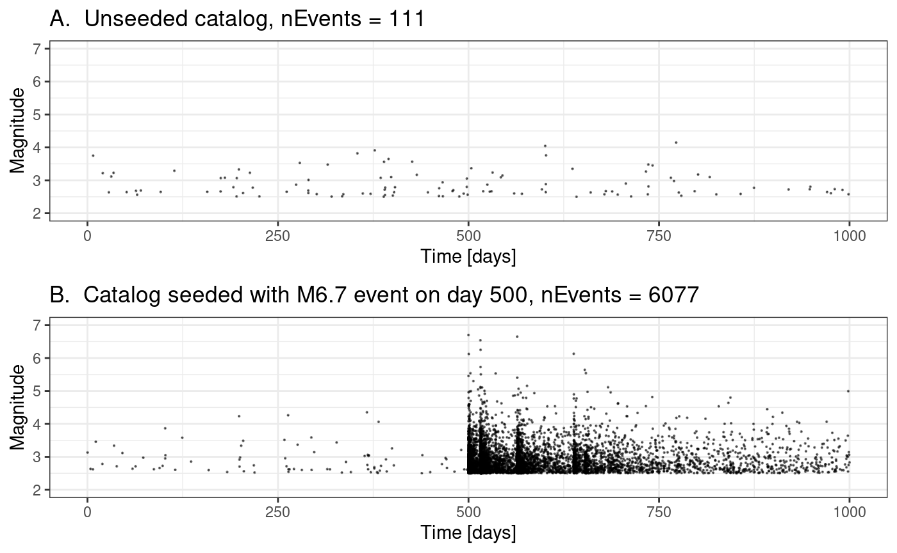
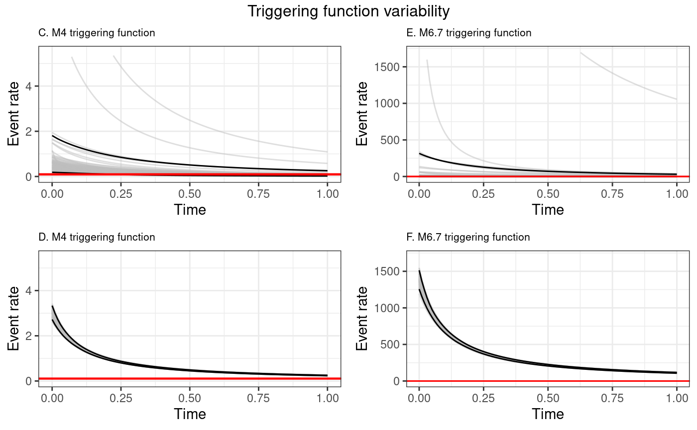
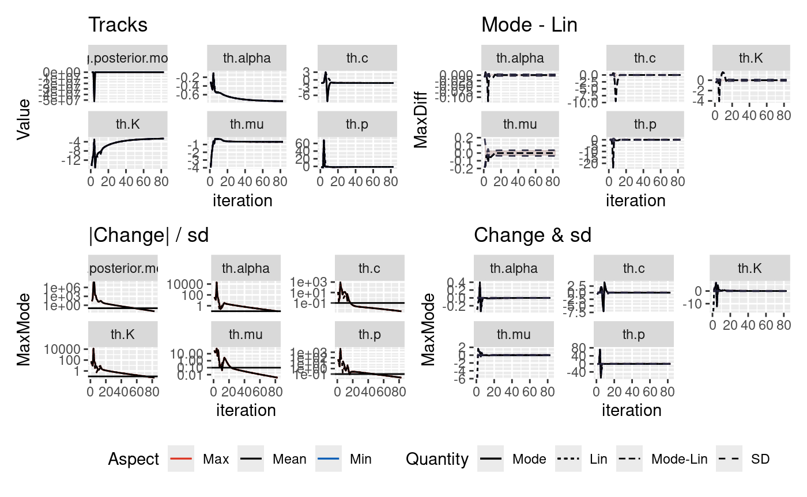

Sensitivity to starting point
Mark Naylor
2022-10-27
Source:vignettes/articles/sensitivityToStartingPoint.Rmd
sensitivityToStartingPoint.RmdMultiple analyses of two catalogues using different initial values
The inlabru algorithm takes an initial guess on the mode of the parameters we are inverting for and iteratively updates this initial guess. There is the potential that there may be bad initial conditions such that they find different solutions and the runtime will differ depending upon how the solution converges.
In this notebook, we explore the robustness of the posteriors on two synthetic catalogues where the true parameters are known. Both catalogues contain 2000 days of data. One catalogue does not contain a large event and the second contains a M6.7 event on day 1000.
library(ETAS.inlabru)
library(tidyquant)
library(gridExtra)
library(grid)
library(lemon)
library(ggplot2)
library(ggpubr)
library(GGally)
library(inlabru)
library(INLA)
library(ETAS.inlabru)
# inla.setOption(pardiso.license="~/sys/licences/pardiso.lic")
library(dplyr)
# Increase/decrease num.cores if you have more/fewer cores on your computer.
# future::multisession works on both Windows, MacOS, and Linux
num.cores <- 2
future::plan(future::multisession, workers = num.cores)
INLA::inla.setOption(num.threads = num.cores)
# To deactivate parallelism, run
# future::plan(future::sequential)
# INLA::inla.setOption(num.threads = 1)Define the parameters for the synthetic catalogues and starting values for inversion
# Parameters we use to generate synthetics, which we will refer to as the 'true' parameters
mu <- 0.1
K <- 0.089
alpha <- 2.29
c <- 0.11
p <- 1.08
# Format the true ETAS parameters for code to generate the synthetics
theta_etas <- data.frame(mu = mu, K = K, alpha = alpha, c = c, p = p)
# A dataframe containing different starting values for the algorithm
startingValues <- data.frame(
mu = c(5., mu),
K = c(1., K),
alpha = c(5., alpha),
c = c(0.3, c),
p = c(1.5, p)
)
nRealisations <- length(startingValues$mu)
# Temporal duration of the synthetic catalogue in days
modelledDuration <- 1000 # [days]
# The minimum magnitude that will be modelled
M0 <- 2.5Generate new catalogues and save them
############
#### Generate the first catalogue with no large events
samp.etas.list <- generate_temporal_ETAS_synthetic(
theta = theta_etas,
beta.p = log(10), M0 = M0, T1 = 0, T2 = modelledDuration, Ht = NULL
)
quiet.ETAS.cat <- bind_rows(samp.etas.list)
quiet.ETAS.cat <- quiet.ETAS.cat[order(quiet.ETAS.cat$ts), ]
# quiet.ETAS.cat <- na.omit(quiet.ETAS.cat)
############
#### Generate the second catalogue with a M6.7 event on day 1000
Ht <- data.frame(ts = c(500), magnitudes = c(6.7)) # Impose a M6.7 event on day 1000
samp.etas.list <- generate_temporal_ETAS_synthetic(theta = theta_etas, beta.p = log(10), M0 = M0, T1 = 0, T2 = modelledDuration, Ht = Ht)
M6p7.ETAS.cat <- bind_rows(samp.etas.list)
M6p7.ETAS.cat <- M6p7.ETAS.cat[order(M6p7.ETAS.cat$ts), ]In this vignette we use Rmd caching, but you can save the catalogues in files explicitly:
# save(M6p7.ETAS.cat,file="M6p7_ETAS_cat.Rda")
# save(quiet.ETAS.cat,file="quiet.ETAS.cat.Rda")Present the catalogues
Load the catalogues
To read from saved object files:
# load("M6p7_ETAS_cat.Rda")
# load("quiet.ETAS.cat.Rda")Plot properties of the catalogues
plots <- list()
plots[[1]] <- ggplot() +
geom_point(data = quiet.ETAS.cat, aes(x = ts, y = magnitudes), size = 0.1, alpha = 0.5) +
xlim(0, modelledDuration) +
ggtitle(paste("A. Unseeded catalog, nEvents =", length(quiet.ETAS.cat$ts))) +
ylim(2, 7) +
xlab("Time [days]") +
ylab("Magnitude") +
theme_bw()
plots[[2]] <- ggplot() +
geom_point(data = M6p7.ETAS.cat, aes(x = ts, y = magnitudes), size = 0.1, alpha = 0.5) +
xlim(0, modelledDuration) +
ggtitle(paste("B. Catalog seeded with M6.7 event on day 500, nEvents =", length(M6p7.ETAS.cat$ts))) +
ylim(2, 7) +
xlab("Time [days]") +
ylab("Magnitude") +
theme_bw()
plt <- grid.arrange(plots[[1]], plots[[2]], ncol = 1, nrow = 2)
# ggsave("initialConditionCats.png", plt)
# ggsave("initialConditionCats.pdf", plt)Analyse the sensitivity to starting conditions
Analysis of quiet catalogue
list.output.quietScenario <- list()
for (i in seq_len(nRealisations)) {
if (exists("list.input")) remove("list.input")
# Load a set of parameters that we will need to tweak for this application
fpath <- system.file("extdata", "user_input_synthetic_noCatalogue.txt", package = "ETAS.inlabru")
list.input <- create_input_list_temporal_noCatalogue(fpath)
####################
# Tweak the variables loaded from the input file
list.input$M0 <- M0
list.input$time.int <- c(0, modelledDuration)
list.input$T12 <- c(0, modelledDuration)
# Change the starting location, measured on the ETAS scale
list.input$mu.init <- startingValues$mu[i]
list.input$alpha.init <- startingValues$alpha[i]
list.input$K.init <- startingValues$K[i]
list.input$c.init <- startingValues$c[i]
list.input$p.init <- startingValues$p[i]
link.f <- list(
mu = \(x) gamma_t(x, a_mu, b_mu),
K = \(x) loggaus_t(x, a_K, b_K),
alpha = \(x) unif_t(x, a_alpha, b_alpha),
c_ = \(x) unif_t(x, a_c, b_c),
p = \(x) unif_t(x, a_p, b_p)
)
# initial value - convert from ETAS scale to internal scale
list.input$th.init <- list(
th.mu = inv_gamma_t(list.input$mu.init, list.input$a_mu, list.input$b_mu),
th.K = inv_loggaus_t(list.input$K.init, list.input$a_K, list.input$b_K),
th.alpha = inv_unif_t(list.input$alpha.init, list.input$a_alpha, list.input$b_alpha),
th.c = inv_unif_t(list.input$c.init, list.input$a_c, list.input$b_c),
th.p = inv_unif_t(list.input$p.init, list.input$a_p, list.input$b_p)
)
# Define options for inlabru
if (is.null(list.input$max_step)) {
list.input$bru.opt.list <- list(
bru_verbose = 0, # type of visual output
bru_max_iter = list.input$max_iter, # maximum number of iterations
# bru_method = list(max_step = 0.5),
bru_initial = list.input$th.init
) # parameters initial values
} else {
list.input$bru.opt.list <- list(
bru_verbose = 0, # type of visual output
bru_max_iter = list.input$max_iter, # maximum number of iterations
bru_method = list(max_step = list.input$max_step),
bru_initial = list.input$th.init
) # parameters initial values
}
## Add out catalogue to the input list
list.input$catalog <- data.frame(
time_diff = quiet.ETAS.cat$ts,
magnitudes = quiet.ETAS.cat$magnitudes
)
## Add the catalogue formatted for bru
list.input$catalog.bru <- data.frame(
ts = quiet.ETAS.cat$ts,
magnitudes = quiet.ETAS.cat$magnitudes,
idx.p = seq_len(nrow(quiet.ETAS.cat))
)
## Input list is now formatted
####################
## Run the model according to the input list
ETAS.model.fit <- Temporal.ETAS.fit(list.input)
## Small bit of post processing
list.output.quietScenario[[i]] <- append(list.input, list(model.fit = ETAS.model.fit))
list.output.quietScenario[[i]]$runtime <- sum(list.output.quietScenario[[i]]$model.fit$bru_timings$Time)
list.output.quietScenario[[i]]$nEvents <- length(list.output.quietScenario[[i]]$catalog[, 1])
}
#> Start model fitting
#> Start creating grid...
#> Finished creating grid, time 0.1656168
#> Finish model fitting
#> Start model fitting
#> Start creating grid...
#> Finished creating grid, time 0.4050794
#> Finish model fittingAnalysis of M6.7 catalogue
list.output.M6p7Scenario <- list()
for (i in seq_len(nRealisations)) {
if (exists("list.input")) {
remove(list.input)
}
# Load a set of parameters that we will need to tweak for this application
fpath <- system.file("extdata", "user_input_synthetic_noCatalogue.txt", package = "ETAS.inlabru")
list.input <- create_input_list_temporal_noCatalogue(fpath)
####################
# Tweak the variables laoded from the input file
list.input$M0 <- M0
list.input$time.int <- c(0, modelledDuration)
list.input$T12 <- c(0, modelledDuration)
# Change the starting location, measured on the ETAS scale
list.input$mu.init <- startingValues$mu[i]
list.input$alpha.init <- startingValues$alpha[i]
list.input$K.init <- startingValues$K[i]
list.input$c.init <- startingValues$c[i]
list.input$p.init <- startingValues$p[i]
link.f <- list(
mu = \(x) gamma_t(x, a_mu, b_mu),
K = \(x) loggaus_t(x, a_K, b_K),
alpha = \(x) unif_t(x, a_alpha, b_alpha),
c_ = \(x) unif_t(x, a_c, b_c),
p = \(x) unif_t(x, a_p, b_p)
)
# initial value - convert from ETAS scale to internal scale
list.input$th.init <- list(
th.mu = inv_gamma_t(list.input$mu.init, list.input$a_mu, list.input$b_mu),
th.K = inv_loggaus_t(list.input$K.init, list.input$a_K, list.input$b_K),
th.alpha = inv_unif_t(list.input$alpha.init, list.input$a_alpha, list.input$b_alpha),
th.c = inv_unif_t(list.input$c.init, list.input$a_c, list.input$b_c),
th.p = inv_unif_t(list.input$p.init, list.input$a_p, list.input$b_p)
)
# Define options for inlabru
if (is.null(list.input$max_step)) {
list.input$bru.opt.list <- list(
bru_verbose = 4, # type of visual output
bru_max_iter = list.input$max_iter, # maximum number of iterations
# bru_method = list(max_step = 0.5),
bru_initial = list.input$th.init
) # parameters initial values
} else {
list.input$bru.opt.list <- list(
bru_verbose = 4, # type of visual output
bru_max_iter = list.input$max_iter, # maximum number of iterations
bru_method = list(max_step = list.input$max_step),
bru_initial = list.input$th.init
) # parameters initial values
}
## Add out catalogue to the input list
list.input$catalog <- data.frame(
time_diff = M6p7.ETAS.cat$ts,
magnitudes = M6p7.ETAS.cat$magnitudes
)
## Add the catalogue formatted for bru
list.input$catalog.bru <- data.frame(
ts = M6p7.ETAS.cat$ts,
magnitudes = M6p7.ETAS.cat$magnitudes,
idx.p = seq_len(nrow(M6p7.ETAS.cat))
)
## Input list is now formatted
####################
## Run the model according to the input list
ETAS.model.fit <- Temporal.ETAS.fit(list.input)
## Small bit of post processing
list.output.M6p7Scenario[[i]] <- append(list.input, list(model.fit = ETAS.model.fit))
list.output.M6p7Scenario[[i]]$runtime <- sum(list.output.M6p7Scenario[[i]]$model.fit$bru_timings$Time)
list.output.M6p7Scenario[[i]]$nEvents <- length(list.output.M6p7Scenario[[i]]$catalog[, 1])
}
#> Start model fitting
#> Start creating grid...
#> Finished creating grid, time 11.80497
#> iinla: Evaluate component inputs
#> iinla: Evaluate component linearisations
#> iinla: Evaluate component simplifications
#> iinla: Evaluate predictor linearisation
#> iinla: Construct inla stack
#> iinla: Model initialisation completed
#> iinla: Iteration 1 [max:100]
#> iinla: Step rescaling: 96.82%, Approx Optimisation (norm0 = 19910, norm1 = 486.1, norm01 = 19950)
#> iinla: |lin1-lin0| = 19950
#> <eta-lin1,delta>/|delta| = -42.85
#> |eta-lin0 - delta <delta,eta-lin0>/<delta,delta>| = 484.2
#> iinla: Evaluate component linearisations
#> iinla: Evaluate predictor linearisation
#> iinla: Iteration 2 [max:100]
#> iinla: Step rescaling: 162%, Expand (norm0 = 5708, norm1 = 1694, norm01 = 4060)
#> iinla: Step rescaling: 100%, Overstep (norm0 = 3666, norm1 = 452.3, norm01 = 4060)
#> iinla: Step rescaling: 111.2%, Approx Optimisation (norm0 = 4045, norm1 = 253.7, norm01 = 4060)
#> iinla: |lin1-lin0| = 4060
#> <eta-lin1,delta>/|delta| = -23.39
#> |eta-lin0 - delta <delta,eta-lin0>/<delta,delta>| = 252.7
#> iinla: Evaluate component linearisations
#> iinla: Evaluate predictor linearisation
#> iinla: Max deviation from previous: 1710% of SD, and line search is active [stop if: <10% and line search inactive]
#> iinla: Iteration 3 [max:100]
#> iinla: Step rescaling: 162%, Expand (norm0 = 4432, norm1 = 1539, norm01 = 2897)
#> iinla: Step rescaling: 100%, Overstep (norm0 = 2773, norm1 = 143.4, norm01 = 2897)
#> iinla: Step rescaling: 104.6%, Approx Optimisation (norm0 = 2897, norm1 = 74.64, norm01 = 2897)
#> iinla: |lin1-lin0| = 2897
#> <eta-lin1,delta>/|delta| = -1.69
#> |eta-lin0 - delta <delta,eta-lin0>/<delta,delta>| = 74.62
#> iinla: Evaluate component linearisations
#> iinla: Evaluate predictor linearisation
#> iinla: Max deviation from previous: 1900% of SD, and line search is active [stop if: <10% and line search inactive]
#> iinla: Iteration 4 [max:100]
#> iinla: Step rescaling: 61.8%, Contract (norm0 = 549.9, norm1 = 1073, norm01 = 1473)
#> iinla: Step rescaling: 52.73%, Approx Optimisation (norm0 = 530.9, norm1 = 998.4, norm01 = 1473)
#> iinla: |lin1-lin0| = 1473
#> <eta-lin1,delta>/|delta| = -979.3
#> |eta-lin0 - delta <delta,eta-lin0>/<delta,delta>| = 194.5
#> iinla: Evaluate component linearisations
#> iinla: Evaluate predictor linearisation
#> iinla: Max deviation from previous: 1250% of SD, and line search is active [stop if: <10% and line search inactive]
#> iinla: Iteration 5 [max:100]
#> iinla: Step rescaling: 162%, Expand (norm0 = 2435, norm1 = 791.6, norm01 = 1650)
#> iinla: Step rescaling: 100%, Overstep (norm0 = 1549, norm1 = 115.9, norm01 = 1650)
#> iinla: Step rescaling: 106.7%, Approx Optimisation (norm0 = 1648, norm1 = 62.22, norm01 = 1650)
#> iinla: |lin1-lin0| = 1650
#> <eta-lin1,delta>/|delta| = -3.775
#> |eta-lin0 - delta <delta,eta-lin0>/<delta,delta>| = 62.1
#> iinla: Evaluate component linearisations
#> iinla: Evaluate predictor linearisation
#> iinla: Max deviation from previous: 1080% of SD, and line search is active [stop if: <10% and line search inactive]
#> iinla: Iteration 6 [max:100]
#> iinla: Step rescaling: 162%, Expand (norm0 = 1621, norm1 = 615.3, norm01 = 1005)
#> iinla: Step rescaling: 100%, Overstep (norm0 = 1003, norm1 = 2.672, norm01 = 1005)
#> iinla: Step rescaling: 100.2%, Approx Optimisation (norm0 = 1005, norm1 = 1.481, norm01 = 1005)
#> iinla: |lin1-lin0| = 1005
#> <eta-lin1,delta>/|delta| = 0.005327
#> |eta-lin0 - delta <delta,eta-lin0>/<delta,delta>| = 1.481
#> iinla: Evaluate component linearisations
#> iinla: Evaluate predictor linearisation
#> iinla: Max deviation from previous: 439% of SD, and line search is active [stop if: <10% and line search inactive]
#> iinla: Iteration 7 [max:100]
#> iinla: Step rescaling: 162%, Expand (norm0 = 1208, norm1 = 444.7, norm01 = 763.8)
#> iinla: Step rescaling: 100%, Overstep (norm0 = 753.8, norm1 = 12.7, norm01 = 763.8)
#> iinla: Step rescaling: 101.3%, Approx Optimisation (norm0 = 763.7, norm1 = 7.917, norm01 = 763.8)
#> iinla: |lin1-lin0| = 763.8
#> <eta-lin1,delta>/|delta| = -0.1787
#> |eta-lin0 - delta <delta,eta-lin0>/<delta,delta>| = 7.915
#> iinla: Evaluate component linearisations
#> iinla: Evaluate predictor linearisation
#> iinla: Max deviation from previous: 336% of SD, and line search is active [stop if: <10% and line search inactive]
#> iinla: Iteration 8 [max:100]
#> iinla: Step rescaling: 162%, Expand (norm0 = 1128, norm1 = 426, norm01 = 701.6)
#> iinla: Step rescaling: 100%, Overstep (norm0 = 698.7, norm1 = 3.592, norm01 = 701.6)
#> iinla: Step rescaling: 100.4%, Approx Optimisation (norm0 = 701.6, norm1 = 2.211, norm01 = 701.6)
#> iinla: |lin1-lin0| = 701.6
#> <eta-lin1,delta>/|delta| = -0.01453
#> |eta-lin0 - delta <delta,eta-lin0>/<delta,delta>| = 2.211
#> iinla: Evaluate component linearisations
#> iinla: Evaluate predictor linearisation
#> iinla: Max deviation from previous: 309% of SD, and line search is active [stop if: <10% and line search inactive]
#> iinla: Iteration 9 [max:100]
#> iinla: Step rescaling: 162%, Expand (norm0 = 1012, norm1 = 381.5, norm01 = 630.9)
#> iinla: Step rescaling: 100%, Overstep (norm0 = 627.8, norm1 = 4.015, norm01 = 630.9)
#> iinla: Step rescaling: 100.5%, Approx Optimisation (norm0 = 630.9, norm1 = 2.484, norm01 = 630.9)
#> iinla: |lin1-lin0| = 630.9
#> <eta-lin1,delta>/|delta| = -0.02034
#> |eta-lin0 - delta <delta,eta-lin0>/<delta,delta>| = 2.484
#> iinla: Evaluate component linearisations
#> iinla: Evaluate predictor linearisation
#> iinla: Max deviation from previous: 278% of SD, and line search is active [stop if: <10% and line search inactive]
#> iinla: Iteration 10 [max:100]
#> iinla: Step rescaling: 162%, Expand (norm0 = 935.7, norm1 = 353.6, norm01 = 582.2)
#> iinla: Step rescaling: 100%, Overstep (norm0 = 579.9, norm1 = 3.003, norm01 = 582.2)
#> iinla: Step rescaling: 100.4%, Approx Optimisation (norm0 = 582.2, norm1 = 1.861, norm01 = 582.2)
#> iinla: |lin1-lin0| = 582.2
#> <eta-lin1,delta>/|delta| = -0.01227
#> |eta-lin0 - delta <delta,eta-lin0>/<delta,delta>| = 1.861
#> iinla: Evaluate component linearisations
#> iinla: Evaluate predictor linearisation
#> iinla: Max deviation from previous: 258% of SD, and line search is active [stop if: <10% and line search inactive]
#> iinla: Iteration 11 [max:100]
#> iinla: Step rescaling: 162%, Expand (norm0 = 865.3, norm1 = 327.3, norm01 = 538)
#> iinla: Step rescaling: 100%, Overstep (norm0 = 536, norm1 = 2.479, norm01 = 538)
#> iinla: Step rescaling: 100.4%, Approx Optimisation (norm0 = 538, norm1 = 1.54, norm01 = 538)
#> iinla: |lin1-lin0| = 538
#> <eta-lin1,delta>/|delta| = -0.00906
#> |eta-lin0 - delta <delta,eta-lin0>/<delta,delta>| = 1.54
#> iinla: Evaluate component linearisations
#> iinla: Evaluate predictor linearisation
#> iinla: Max deviation from previous: 239% of SD, and line search is active [stop if: <10% and line search inactive]
#> iinla: Iteration 12 [max:100]
#> iinla: Step rescaling: 162%, Expand (norm0 = 803.6, norm1 = 304.3, norm01 = 499.3)
#> iinla: Step rescaling: 100%, Overstep (norm0 = 497.7, norm1 = 2.091, norm01 = 499.3)
#> iinla: Step rescaling: 100.3%, Approx Optimisation (norm0 = 499.3, norm1 = 1.303, norm01 = 499.3)
#> iinla: |lin1-lin0| = 499.3
#> <eta-lin1,delta>/|delta| = -0.008958
#> |eta-lin0 - delta <delta,eta-lin0>/<delta,delta>| = 1.303
#> iinla: Evaluate component linearisations
#> iinla: Evaluate predictor linearisation
#> iinla: Max deviation from previous: 223% of SD, and line search is active [stop if: <10% and line search inactive]
#> iinla: Iteration 13 [max:100]
#> iinla: Step rescaling: 162%, Expand (norm0 = 748.5, norm1 = 283.6, norm01 = 464.9)
#> iinla: Step rescaling: 100%, Overstep (norm0 = 463.5, norm1 = 1.798, norm01 = 464.9)
#> iinla: Step rescaling: 100.3%, Approx Optimisation (norm0 = 464.9, norm1 = 1.123, norm01 = 464.9)
#> iinla: |lin1-lin0| = 464.9
#> <eta-lin1,delta>/|delta| = -0.01044
#> |eta-lin0 - delta <delta,eta-lin0>/<delta,delta>| = 1.123
#> iinla: Evaluate component linearisations
#> iinla: Evaluate predictor linearisation
#> iinla: Max deviation from previous: 209% of SD, and line search is active [stop if: <10% and line search inactive]
#> iinla: Iteration 14 [max:100]
#> iinla: Step rescaling: 162%, Expand (norm0 = 698.9, norm1 = 265, norm01 = 433.9)
#> iinla: Step rescaling: 100%, Overstep (norm0 = 432.7, norm1 = 1.567, norm01 = 433.9)
#> iinla: Step rescaling: 100.3%, Approx Optimisation (norm0 = 433.9, norm1 = 0.9812, norm01 = 433.9)
#> iinla: |lin1-lin0| = 433.9
#> <eta-lin1,delta>/|delta| = -0.01135
#> |eta-lin0 - delta <delta,eta-lin0>/<delta,delta>| = 0.9811
#> iinla: Evaluate component linearisations
#> iinla: Evaluate predictor linearisation
#> iinla: Max deviation from previous: 196% of SD, and line search is active [stop if: <10% and line search inactive]
#> iinla: Iteration 15 [max:100]
#> iinla: Step rescaling: 162%, Expand (norm0 = 654, norm1 = 248.1, norm01 = 405.9)
#> iinla: Step rescaling: 100%, Overstep (norm0 = 404.9, norm1 = 1.378, norm01 = 405.9)
#> iinla: Step rescaling: 100.3%, Approx Optimisation (norm0 = 405.9, norm1 = 0.8648, norm01 = 405.9)
#> iinla: |lin1-lin0| = 405.9
#> <eta-lin1,delta>/|delta| = -0.0119
#> |eta-lin0 - delta <delta,eta-lin0>/<delta,delta>| = 0.8647
#> iinla: Evaluate component linearisations
#> iinla: Evaluate predictor linearisation
#> iinla: Max deviation from previous: 184% of SD, and line search is active [stop if: <10% and line search inactive]
#> iinla: Iteration 16 [max:100]
#> iinla: Step rescaling: 162%, Expand (norm0 = 613.2, norm1 = 232.7, norm01 = 380.5)
#> iinla: Step rescaling: 100%, Overstep (norm0 = 379.5, norm1 = 1.219, norm01 = 380.5)
#> iinla: Step rescaling: 100.3%, Approx Optimisation (norm0 = 380.5, norm1 = 0.7671, norm01 = 380.5)
#> iinla: |lin1-lin0| = 380.5
#> <eta-lin1,delta>/|delta| = 0.003192
#> |eta-lin0 - delta <delta,eta-lin0>/<delta,delta>| = 0.7671
#> iinla: Evaluate component linearisations
#> iinla: Evaluate predictor linearisation
#> iinla: Max deviation from previous: 173% of SD, and line search is active [stop if: <10% and line search inactive]
#> iinla: Iteration 17 [max:100]
#> iinla: Step rescaling: 162%, Expand (norm0 = 575.8, norm1 = 218.6, norm01 = 357.3)
#> iinla: Step rescaling: 100%, Overstep (norm0 = 356.4, norm1 = 1.084, norm01 = 357.3)
#> iinla: Step rescaling: 100.2%, Approx Optimisation (norm0 = 357.3, norm1 = 0.6837, norm01 = 357.3)
#> iinla: |lin1-lin0| = 357.3
#> <eta-lin1,delta>/|delta| = 0.002103
#> |eta-lin0 - delta <delta,eta-lin0>/<delta,delta>| = 0.6837
#> iinla: Evaluate component linearisations
#> iinla: Evaluate predictor linearisation
#> iinla: Max deviation from previous: 163% of SD, and line search is active [stop if: <10% and line search inactive]
#> iinla: Iteration 18 [max:100]
#> iinla: Step rescaling: 162%, Expand (norm0 = 541.6, norm1 = 205.6, norm01 = 335.9)
#> iinla: Step rescaling: 100%, Overstep (norm0 = 335.2, norm1 = 0.9675, norm01 = 335.9)
#> iinla: Step rescaling: 100.2%, Approx Optimisation (norm0 = 335.9, norm1 = 0.6115, norm01 = 335.9)
#> iinla: |lin1-lin0| = 335.9
#> <eta-lin1,delta>/|delta| = 0.001207
#> |eta-lin0 - delta <delta,eta-lin0>/<delta,delta>| = 0.6115
#> iinla: Evaluate component linearisations
#> iinla: Evaluate predictor linearisation
#> iinla: Max deviation from previous: 154% of SD, and line search is active [stop if: <10% and line search inactive]
#> iinla: Iteration 19 [max:100]
#> iinla: Step rescaling: 162%, Expand (norm0 = 510, norm1 = 193.7, norm01 = 316.3)
#> iinla: Step rescaling: 100%, Overstep (norm0 = 315.6, norm1 = 0.866, norm01 = 316.3)
#> iinla: Step rescaling: 100.2%, Approx Optimisation (norm0 = 316.3, norm1 = 0.5486, norm01 = 316.3)
#> iinla: |lin1-lin0| = 316.3
#> <eta-lin1,delta>/|delta| = 0.0004653
#> |eta-lin0 - delta <delta,eta-lin0>/<delta,delta>| = 0.5486
#> iinla: Evaluate component linearisations
#> iinla: Evaluate predictor linearisation
#> iinla: Max deviation from previous: 146% of SD, and line search is active [stop if: <10% and line search inactive]
#> iinla: Iteration 20 [max:100]
#> iinla: Step rescaling: 162%, Expand (norm0 = 480.9, norm1 = 182.7, norm01 = 298.2)
#> iinla: Step rescaling: 100%, Overstep (norm0 = 297.6, norm1 = 0.7771, norm01 = 298.2)
#> iinla: Step rescaling: 100.2%, Approx Optimisation (norm0 = 298.2, norm1 = 0.4933, norm01 = 298.2)
#> iinla: |lin1-lin0| = 298.2
#> <eta-lin1,delta>/|delta| = -0.0001512
#> |eta-lin0 - delta <delta,eta-lin0>/<delta,delta>| = 0.4933
#> iinla: Evaluate component linearisations
#> iinla: Evaluate predictor linearisation
#> iinla: Max deviation from previous: 138% of SD, and line search is active [stop if: <10% and line search inactive]
#> iinla: Iteration 21 [max:100]
#> iinla: Step rescaling: 162%, Expand (norm0 = 453.9, norm1 = 172.5, norm01 = 281.4)
#> iinla: Step rescaling: 100%, Overstep (norm0 = 280.9, norm1 = 0.6987, norm01 = 281.4)
#> iinla: Step rescaling: 100.2%, Approx Optimisation (norm0 = 281.4, norm1 = 0.4444, norm01 = 281.4)
#> iinla: |lin1-lin0| = 281.4
#> <eta-lin1,delta>/|delta| = -0.0006643
#> |eta-lin0 - delta <delta,eta-lin0>/<delta,delta>| = 0.4444
#> iinla: Evaluate component linearisations
#> iinla: Evaluate predictor linearisation
#> iinla: Max deviation from previous: 131% of SD, and line search is active [stop if: <10% and line search inactive]
#> iinla: Iteration 22 [max:100]
#> iinla: Step rescaling: 162%, Expand (norm0 = 428.9, norm1 = 163, norm01 = 265.9)
#> iinla: Step rescaling: 100%, Overstep (norm0 = 265.4, norm1 = 0.6294, norm01 = 265.9)
#> iinla: Step rescaling: 100.2%, Approx Optimisation (norm0 = 265.9, norm1 = 0.4011, norm01 = 265.9)
#> iinla: |lin1-lin0| = 265.9
#> <eta-lin1,delta>/|delta| = -0.001091
#> |eta-lin0 - delta <delta,eta-lin0>/<delta,delta>| = 0.4011
#> iinla: Evaluate component linearisations
#> iinla: Evaluate predictor linearisation
#> iinla: Max deviation from previous: 124% of SD, and line search is active [stop if: <10% and line search inactive]
#> iinla: Iteration 23 [max:100]
#> iinla: Step rescaling: 162%, Expand (norm0 = 405.6, norm1 = 154.2, norm01 = 251.4)
#> iinla: Step rescaling: 100%, Overstep (norm0 = 251, norm1 = 0.5678, norm01 = 251.4)
#> iinla: Step rescaling: 100.2%, Approx Optimisation (norm0 = 251.4, norm1 = 0.3626, norm01 = 251.4)
#> iinla: |lin1-lin0| = 251.4
#> <eta-lin1,delta>/|delta| = -0.001445
#> |eta-lin0 - delta <delta,eta-lin0>/<delta,delta>| = 0.3626
#> iinla: Evaluate component linearisations
#> iinla: Evaluate predictor linearisation
#> iinla: Max deviation from previous: 118% of SD, and line search is active [stop if: <10% and line search inactive]
#> iinla: Iteration 24 [max:100]
#> iinla: Step rescaling: 162%, Expand (norm0 = 383.9, norm1 = 146, norm01 = 237.9)
#> iinla: Step rescaling: 100%, Overstep (norm0 = 237.5, norm1 = 0.5129, norm01 = 237.9)
#> iinla: Step rescaling: 100.2%, Approx Optimisation (norm0 = 237.9, norm1 = 0.3282, norm01 = 237.9)
#> iinla: |lin1-lin0| = 237.9
#> <eta-lin1,delta>/|delta| = -0.001737
#> |eta-lin0 - delta <delta,eta-lin0>/<delta,delta>| = 0.3282
#> iinla: Evaluate component linearisations
#> iinla: Evaluate predictor linearisation
#> iinla: Max deviation from previous: 112% of SD, and line search is active [stop if: <10% and line search inactive]
#> iinla: Iteration 25 [max:100]
#> iinla: Step rescaling: 162%, Expand (norm0 = 363.6, norm1 = 138.3, norm01 = 225.3)
#> iinla: Step rescaling: 100%, Overstep (norm0 = 224.9, norm1 = 0.464, norm01 = 225.3)
#> iinla: Step rescaling: 100.2%, Approx Optimisation (norm0 = 225.3, norm1 = 0.2974, norm01 = 225.3)
#> iinla: |lin1-lin0| = 225.3
#> <eta-lin1,delta>/|delta| = -0.001976
#> |eta-lin0 - delta <delta,eta-lin0>/<delta,delta>| = 0.2974
#> iinla: Evaluate component linearisations
#> iinla: Evaluate predictor linearisation
#> iinla: Max deviation from previous: 106% of SD, and line search is active [stop if: <10% and line search inactive]
#> iinla: Iteration 26 [max:100]
#> iinla: Step rescaling: 162%, Expand (norm0 = 344.6, norm1 = 131.1, norm01 = 213.5)
#> iinla: Step rescaling: 100%, Overstep (norm0 = 213.2, norm1 = 0.4202, norm01 = 213.5)
#> iinla: Step rescaling: 100.2%, Approx Optimisation (norm0 = 213.5, norm1 = 0.2697, norm01 = 213.5)
#> iinla: |lin1-lin0| = 213.5
#> <eta-lin1,delta>/|delta| = -0.00217
#> |eta-lin0 - delta <delta,eta-lin0>/<delta,delta>| = 0.2697
#> iinla: Evaluate component linearisations
#> iinla: Evaluate predictor linearisation
#> iinla: Max deviation from previous: 101% of SD, and line search is active [stop if: <10% and line search inactive]
#> iinla: Iteration 27 [max:100]
#> iinla: Step rescaling: 162%, Expand (norm0 = 326.9, norm1 = 124.4, norm01 = 202.5)
#> iinla: Step rescaling: 100%, Overstep (norm0 = 202.2, norm1 = 0.3809, norm01 = 202.5)
#> iinla: Step rescaling: 100.1%, Approx Optimisation (norm0 = 202.5, norm1 = 0.2449, norm01 = 202.5)
#> iinla: |lin1-lin0| = 202.5
#> <eta-lin1,delta>/|delta| = -0.002326
#> |eta-lin0 - delta <delta,eta-lin0>/<delta,delta>| = 0.2449
#> iinla: Evaluate component linearisations
#> iinla: Evaluate predictor linearisation
#> iinla: Max deviation from previous: 96% of SD, and line search is active [stop if: <10% and line search inactive]
#> iinla: Iteration 28 [max:100]
#> iinla: Step rescaling: 162%, Expand (norm0 = 310.2, norm1 = 118.1, norm01 = 192.1)
#> iinla: Step rescaling: 100%, Overstep (norm0 = 191.9, norm1 = 0.3456, norm01 = 192.1)
#> iinla: Step rescaling: 100.1%, Approx Optimisation (norm0 = 192.1, norm1 = 0.2226, norm01 = 192.1)
#> iinla: |lin1-lin0| = 192.1
#> <eta-lin1,delta>/|delta| = -0.002449
#> |eta-lin0 - delta <delta,eta-lin0>/<delta,delta>| = 0.2226
#> iinla: Evaluate component linearisations
#> iinla: Evaluate predictor linearisation
#> iinla: Max deviation from previous: 91.4% of SD, and line search is active [stop if: <10% and line search inactive]
#> iinla: Iteration 29 [max:100]
#> iinla: Step rescaling: 162%, Expand (norm0 = 294.5, norm1 = 112.1, norm01 = 182.4)
#> iinla: Step rescaling: 100%, Overstep (norm0 = 182.2, norm1 = 0.3138, norm01 = 182.4)
#> iinla: Step rescaling: 100.1%, Approx Optimisation (norm0 = 182.4, norm1 = 0.2024, norm01 = 182.4)
#> iinla: |lin1-lin0| = 182.4
#> <eta-lin1,delta>/|delta| = -0.002544
#> |eta-lin0 - delta <delta,eta-lin0>/<delta,delta>| = 0.2024
#> iinla: Evaluate component linearisations
#> iinla: Evaluate predictor linearisation
#> iinla: Max deviation from previous: 87% of SD, and line search is active [stop if: <10% and line search inactive]
#> iinla: Iteration 30 [max:100]
#> iinla: Step rescaling: 162%, Expand (norm0 = 279.8, norm1 = 106.5, norm01 = 173.3)
#> iinla: Step rescaling: 100%, Overstep (norm0 = 173.1, norm1 = 0.2852, norm01 = 173.3)
#> iinla: Step rescaling: 100.1%, Approx Optimisation (norm0 = 173.3, norm1 = 0.1842, norm01 = 173.3)
#> iinla: |lin1-lin0| = 173.3
#> <eta-lin1,delta>/|delta| = -0.002614
#> |eta-lin0 - delta <delta,eta-lin0>/<delta,delta>| = 0.1842
#> iinla: Evaluate component linearisations
#> iinla: Evaluate predictor linearisation
#> iinla: Max deviation from previous: 82.9% of SD, and line search is active [stop if: <10% and line search inactive]
#> iinla: Iteration 31 [max:100]
#> iinla: Step rescaling: 162%, Expand (norm0 = 265.9, norm1 = 101.3, norm01 = 164.7)
#> iinla: Step rescaling: 100%, Overstep (norm0 = 164.5, norm1 = 0.2593, norm01 = 164.7)
#> iinla: Step rescaling: 100.1%, Approx Optimisation (norm0 = 164.7, norm1 = 0.1678, norm01 = 164.7)
#> iinla: |lin1-lin0| = 164.7
#> <eta-lin1,delta>/|delta| = -0.002663
#> |eta-lin0 - delta <delta,eta-lin0>/<delta,delta>| = 0.1678
#> iinla: Evaluate component linearisations
#> iinla: Evaluate predictor linearisation
#> iinla: Max deviation from previous: 79% of SD, and line search is active [stop if: <10% and line search inactive]
#> iinla: Iteration 32 [max:100]
#> iinla: Step rescaling: 162%, Expand (norm0 = 252.8, norm1 = 96.28, norm01 = 156.6)
#> iinla: Step rescaling: 100%, Overstep (norm0 = 156.4, norm1 = 0.236, norm01 = 156.6)
#> iinla: Step rescaling: 100.1%, Approx Optimisation (norm0 = 156.6, norm1 = 0.1529, norm01 = 156.6)
#> iinla: |lin1-lin0| = 156.6
#> <eta-lin1,delta>/|delta| = -0.002694
#> |eta-lin0 - delta <delta,eta-lin0>/<delta,delta>| = 0.1529
#> iinla: Evaluate component linearisations
#> iinla: Evaluate predictor linearisation
#> iinla: Max deviation from previous: 75.3% of SD, and line search is active [stop if: <10% and line search inactive]
#> iinla: Iteration 33 [max:100]
#> iinla: Step rescaling: 162%, Expand (norm0 = 240.5, norm1 = 91.6, norm01 = 148.9)
#> iinla: Step rescaling: 100%, Overstep (norm0 = 148.7, norm1 = 0.2148, norm01 = 148.9)
#> iinla: Step rescaling: 100.1%, Approx Optimisation (norm0 = 148.9, norm1 = 0.1394, norm01 = 148.9)
#> iinla: |lin1-lin0| = 148.9
#> <eta-lin1,delta>/|delta| = -0.00271
#> |eta-lin0 - delta <delta,eta-lin0>/<delta,delta>| = 0.1394
#> iinla: Evaluate component linearisations
#> iinla: Evaluate predictor linearisation
#> iinla: Max deviation from previous: 71.8% of SD, and line search is active [stop if: <10% and line search inactive]
#> iinla: Iteration 34 [max:100]
#> iinla: Step rescaling: 162%, Expand (norm0 = 228.9, norm1 = 87.17, norm01 = 141.7)
#> iinla: Step rescaling: 100%, Overstep (norm0 = 141.5, norm1 = 0.1957, norm01 = 141.7)
#> iinla: Step rescaling: 100.1%, Approx Optimisation (norm0 = 141.7, norm1 = 0.1271, norm01 = 141.7)
#> iinla: |lin1-lin0| = 141.7
#> <eta-lin1,delta>/|delta| = -0.002712
#> |eta-lin0 - delta <delta,eta-lin0>/<delta,delta>| = 0.1271
#> iinla: Evaluate component linearisations
#> iinla: Evaluate predictor linearisation
#> iinla: Max deviation from previous: 68.5% of SD, and line search is active [stop if: <10% and line search inactive]
#> iinla: Iteration 35 [max:100]
#> iinla: Step rescaling: 162%, Expand (norm0 = 217.8, norm1 = 82.99, norm01 = 134.9)
#> iinla: Step rescaling: 100%, Overstep (norm0 = 134.7, norm1 = 0.1784, norm01 = 134.9)
#> iinla: Step rescaling: 100.1%, Approx Optimisation (norm0 = 134.9, norm1 = 0.116, norm01 = 134.9)
#> iinla: |lin1-lin0| = 134.9
#> <eta-lin1,delta>/|delta| = -0.002704
#> |eta-lin0 - delta <delta,eta-lin0>/<delta,delta>| = 0.116
#> iinla: Evaluate component linearisations
#> iinla: Evaluate predictor linearisation
#> iinla: Max deviation from previous: 65.3% of SD, and line search is inactive [stop if: <10% and line search inactive]
#> iinla: Iteration 36 [max:100]
#> iinla: Step rescaling: 162%, Expand (norm0 = 207.4, norm1 = 79.03, norm01 = 128.4)
#> iinla: Step rescaling: 100%, Overstep (norm0 = 128.3, norm1 = 0.1626, norm01 = 128.4)
#> iinla: Step rescaling: 100.1%, Approx Optimisation (norm0 = 128.4, norm1 = 0.1059, norm01 = 128.4)
#> iinla: |lin1-lin0| = 128.4
#> <eta-lin1,delta>/|delta| = -0.002685
#> |eta-lin0 - delta <delta,eta-lin0>/<delta,delta>| = 0.1059
#> iinla: Evaluate component linearisations
#> iinla: Evaluate predictor linearisation
#> iinla: Max deviation from previous: 62.4% of SD, and line search is inactive [stop if: <10% and line search inactive]
#> iinla: Iteration 37 [max:100]
#> iinla: Step rescaling: 162%, Expand (norm0 = 197.6, norm1 = 75.29, norm01 = 122.3)
#> iinla: Step rescaling: 100%, Overstep (norm0 = 122.2, norm1 = 0.1484, norm01 = 122.3)
#> iinla: Step rescaling: 100.1%, Approx Optimisation (norm0 = 122.3, norm1 = 0.09673, norm01 = 122.3)
#> iinla: |lin1-lin0| = 122.3
#> <eta-lin1,delta>/|delta| = 0.00231
#> |eta-lin0 - delta <delta,eta-lin0>/<delta,delta>| = 0.0967
#> iinla: Evaluate component linearisations
#> iinla: Evaluate predictor linearisation
#> iinla: Max deviation from previous: 59.5% of SD, and line search is inactive [stop if: <10% and line search inactive]
#> iinla: Iteration 38 [max:100]
#> iinla: Step rescaling: 162%, Expand (norm0 = 188.3, norm1 = 71.74, norm01 = 116.5)
#> iinla: Step rescaling: 100%, Overstep (norm0 = 116.4, norm1 = 0.1354, norm01 = 116.5)
#> iinla: Step rescaling: 100.1%, Approx Optimisation (norm0 = 116.5, norm1 = 0.08837, norm01 = 116.5)
#> iinla: |lin1-lin0| = 116.5
#> <eta-lin1,delta>/|delta| = 0.00211
#> |eta-lin0 - delta <delta,eta-lin0>/<delta,delta>| = 0.08834
#> iinla: Evaluate component linearisations
#> iinla: Evaluate predictor linearisation
#> iinla: Max deviation from previous: 56.8% of SD, and line search is inactive [stop if: <10% and line search inactive]
#> iinla: Iteration 39 [max:100]
#> iinla: Step rescaling: 162%, Expand (norm0 = 179.4, norm1 = 68.38, norm01 = 111)
#> iinla: Step rescaling: 100%, Overstep (norm0 = 110.9, norm1 = 0.1236, norm01 = 111)
#> iinla: Step rescaling: 100.1%, Approx Optimisation (norm0 = 111, norm1 = 0.08075, norm01 = 111)
#> iinla: |lin1-lin0| = 111
#> <eta-lin1,delta>/|delta| = 0.001927
#> |eta-lin0 - delta <delta,eta-lin0>/<delta,delta>| = 0.08073
#> iinla: Evaluate component linearisations
#> iinla: Evaluate predictor linearisation
#> iinla: Max deviation from previous: 54.3% of SD, and line search is inactive [stop if: <10% and line search inactive]
#> iinla: Iteration 40 [max:100]
#> iinla: Step rescaling: 162%, Expand (norm0 = 171, norm1 = 65.19, norm01 = 105.8)
#> iinla: Step rescaling: 100%, Overstep (norm0 = 105.8, norm1 = 0.1129, norm01 = 105.8)
#> iinla: Step rescaling: 100.1%, Approx Optimisation (norm0 = 105.8, norm1 = 0.07381, norm01 = 105.8)
#> iinla: |lin1-lin0| = 105.8
#> <eta-lin1,delta>/|delta| = 0.00176
#> |eta-lin0 - delta <delta,eta-lin0>/<delta,delta>| = 0.07379
#> iinla: Evaluate component linearisations
#> iinla: Evaluate predictor linearisation
#> iinla: Max deviation from previous: 51.8% of SD, and line search is inactive [stop if: <10% and line search inactive]
#> iinla: Iteration 41 [max:100]
#> iinla: Step rescaling: 162%, Expand (norm0 = 163.1, norm1 = 62.17, norm01 = 100.9)
#> iinla: Step rescaling: 100%, Overstep (norm0 = 100.8, norm1 = 0.1031, norm01 = 100.9)
#> iinla: Step rescaling: 100.1%, Approx Optimisation (norm0 = 100.9, norm1 = 0.06748, norm01 = 100.9)
#> iinla: |lin1-lin0| = 100.9
#> <eta-lin1,delta>/|delta| = 0.001609
#> |eta-lin0 - delta <delta,eta-lin0>/<delta,delta>| = 0.06747
#> iinla: Evaluate component linearisations
#> iinla: Evaluate predictor linearisation
#> iinla: Max deviation from previous: 49.5% of SD, and line search is inactive [stop if: <10% and line search inactive]
#> iinla: Iteration 42 [max:100]
#> iinla: Step rescaling: 162%, Expand (norm0 = 155.5, norm1 = 59.3, norm01 = 96.25)
#> iinla: Step rescaling: 100%, Overstep (norm0 = 96.18, norm1 = 0.09419, norm01 = 96.25)
#> iinla: Step rescaling: 100.1%, Approx Optimisation (norm0 = 96.25, norm1 = 0.06172, norm01 = 96.25)
#> iinla: |lin1-lin0| = 96.25
#> <eta-lin1,delta>/|delta| = 0.00147
#> |eta-lin0 - delta <delta,eta-lin0>/<delta,delta>| = 0.0617
#> iinla: Evaluate component linearisations
#> iinla: Evaluate predictor linearisation
#> iinla: Max deviation from previous: 47.3% of SD, and line search is inactive [stop if: <10% and line search inactive]
#> iinla: Iteration 43 [max:100]
#> iinla: Step rescaling: 162%, Expand (norm0 = 148.4, norm1 = 56.57, norm01 = 91.81)
#> iinla: Step rescaling: 100%, Overstep (norm0 = 91.75, norm1 = 0.08608, norm01 = 91.81)
#> iinla: Step rescaling: 100.1%, Approx Optimisation (norm0 = 91.81, norm1 = 0.05645, norm01 = 91.81)
#> iinla: |lin1-lin0| = 91.81
#> <eta-lin1,delta>/|delta| = 0.001345
#> |eta-lin0 - delta <delta,eta-lin0>/<delta,delta>| = 0.05644
#> iinla: Evaluate component linearisations
#> iinla: Evaluate predictor linearisation
#> iinla: Max deviation from previous: 45.2% of SD, and line search is inactive [stop if: <10% and line search inactive]
#> iinla: Iteration 44 [max:100]
#> iinla: Step rescaling: 162%, Expand (norm0 = 141.6, norm1 = 53.98, norm01 = 87.6)
#> iinla: Step rescaling: 100%, Overstep (norm0 = 87.54, norm1 = 0.07868, norm01 = 87.6)
#> iinla: Step rescaling: 100.1%, Approx Optimisation (norm0 = 87.6, norm1 = 0.05165, norm01 = 87.6)
#> iinla: |lin1-lin0| = 87.6
#> <eta-lin1,delta>/|delta| = 0.00123
#> |eta-lin0 - delta <delta,eta-lin0>/<delta,delta>| = 0.05163
#> iinla: Evaluate component linearisations
#> iinla: Evaluate predictor linearisation
#> iinla: Max deviation from previous: 43.2% of SD, and line search is inactive [stop if: <10% and line search inactive]
#> iinla: Iteration 45 [max:100]
#> iinla: Step rescaling: 162%, Expand (norm0 = 135.1, norm1 = 51.52, norm01 = 83.59)
#> iinla: Step rescaling: 100%, Overstep (norm0 = 83.54, norm1 = 0.07194, norm01 = 83.59)
#> iinla: Step rescaling: 100.1%, Approx Optimisation (norm0 = 83.59, norm1 = 0.04726, norm01 = 83.59)
#> iinla: |lin1-lin0| = 83.59
#> <eta-lin1,delta>/|delta| = 0.001125
#> |eta-lin0 - delta <delta,eta-lin0>/<delta,delta>| = 0.04725
#> iinla: Evaluate component linearisations
#> iinla: Evaluate predictor linearisation
#> iinla: Max deviation from previous: 41.3% of SD, and line search is inactive [stop if: <10% and line search inactive]
#> iinla: Iteration 46 [max:100]
#> iinla: Step rescaling: 162%, Expand (norm0 = 129, norm1 = 49.18, norm01 = 79.78)
#> iinla: Step rescaling: 100%, Overstep (norm0 = 79.73, norm1 = 0.06579, norm01 = 79.78)
#> iinla: Step rescaling: 100.1%, Approx Optimisation (norm0 = 79.79, norm1 = 0.04326, norm01 = 79.78)
#> iinla: |lin1-lin0| = 79.78
#> <eta-lin1,delta>/|delta| = 0.001029
#> |eta-lin0 - delta <delta,eta-lin0>/<delta,delta>| = 0.04324
#> iinla: Evaluate component linearisations
#> iinla: Evaluate predictor linearisation
#> iinla: Max deviation from previous: 39.5% of SD, and line search is inactive [stop if: <10% and line search inactive]
#> iinla: Iteration 47 [max:100]
#> iinla: Step rescaling: 162%, Expand (norm0 = 123.1, norm1 = 46.95, norm01 = 76.16)
#> iinla: Step rescaling: 100%, Overstep (norm0 = 76.12, norm1 = 0.06018, norm01 = 76.16)
#> iinla: Step rescaling: 100.1%, Approx Optimisation (norm0 = 76.16, norm1 = 0.03959, norm01 = 76.16)
#> iinla: |lin1-lin0| = 76.16
#> <eta-lin1,delta>/|delta| = 0.0009416
#> |eta-lin0 - delta <delta,eta-lin0>/<delta,delta>| = 0.03958
#> iinla: Evaluate component linearisations
#> iinla: Evaluate predictor linearisation
#> iinla: Max deviation from previous: 37.7% of SD, and line search is inactive [stop if: <10% and line search inactive]
#> iinla: Iteration 48 [max:100]
#> iinla: Step rescaling: 162%, Expand (norm0 = 117.6, norm1 = 44.83, norm01 = 72.72)
#> iinla: Step rescaling: 100%, Overstep (norm0 = 72.68, norm1 = 0.05505, norm01 = 72.72)
#> iinla: Step rescaling: 100.1%, Approx Optimisation (norm0 = 72.72, norm1 = 0.03625, norm01 = 72.72)
#> iinla: |lin1-lin0| = 72.72
#> <eta-lin1,delta>/|delta| = 0.0008617
#> |eta-lin0 - delta <delta,eta-lin0>/<delta,delta>| = 0.03624
#> iinla: Evaluate component linearisations
#> iinla: Evaluate predictor linearisation
#> iinla: Max deviation from previous: 36.1% of SD, and line search is inactive [stop if: <10% and line search inactive]
#> iinla: Iteration 49 [max:100]
#> iinla: Step rescaling: 162%, Expand (norm0 = 112.3, norm1 = 42.82, norm01 = 69.44)
#> iinla: Step rescaling: 100%, Overstep (norm0 = 69.4, norm1 = 0.05037, norm01 = 69.44)
#> iinla: Step rescaling: 100.1%, Approx Optimisation (norm0 = 69.44, norm1 = 0.03319, norm01 = 69.44)
#> iinla: |lin1-lin0| = 69.44
#> <eta-lin1,delta>/|delta| = 0.0007888
#> |eta-lin0 - delta <delta,eta-lin0>/<delta,delta>| = 0.03318
#> iinla: Evaluate component linearisations
#> iinla: Evaluate predictor linearisation
#> iinla: Max deviation from previous: 34.5% of SD, and line search is inactive [stop if: <10% and line search inactive]
#> iinla: Iteration 50 [max:100]
#> iinla: Step rescaling: 162%, Expand (norm0 = 107.2, norm1 = 40.9, norm01 = 66.32)
#> iinla: Step rescaling: 100%, Overstep (norm0 = 66.29, norm1 = 0.0461, norm01 = 66.32)
#> iinla: Step rescaling: 100.1%, Approx Optimisation (norm0 = 66.32, norm1 = 0.03039, norm01 = 66.32)
#> iinla: |lin1-lin0| = 66.32
#> <eta-lin1,delta>/|delta| = 0.0007221
#> |eta-lin0 - delta <delta,eta-lin0>/<delta,delta>| = 0.03038
#> iinla: Evaluate component linearisations
#> iinla: Evaluate predictor linearisation
#> iinla: Max deviation from previous: 33% of SD, and line search is inactive [stop if: <10% and line search inactive]
#> iinla: Iteration 51 [max:100]
#> iinla: Step rescaling: 162%, Expand (norm0 = 102.4, norm1 = 39.07, norm01 = 63.35)
#> iinla: Step rescaling: 100%, Overstep (norm0 = 63.32, norm1 = 0.04219, norm01 = 63.35)
#> iinla: Step rescaling: 100.1%, Approx Optimisation (norm0 = 63.35, norm1 = 0.02784, norm01 = 63.35)
#> iinla: |lin1-lin0| = 63.35
#> <eta-lin1,delta>/|delta| = 0.0006611
#> |eta-lin0 - delta <delta,eta-lin0>/<delta,delta>| = 0.02783
#> iinla: Evaluate component linearisations
#> iinla: Evaluate predictor linearisation
#> iinla: Max deviation from previous: 31.6% of SD, and line search is inactive [stop if: <10% and line search inactive]
#> iinla: Iteration 52 [max:100]
#> iinla: Step rescaling: 162%, Expand (norm0 = 97.84, norm1 = 37.33, norm01 = 60.52)
#> iinla: Step rescaling: 100%, Overstep (norm0 = 60.49, norm1 = 0.03862, norm01 = 60.52)
#> iinla: Step rescaling: 100%, Approx Optimisation (norm0 = 60.52, norm1 = 0.0255, norm01 = 60.52)
#> iinla: |lin1-lin0| = 60.52
#> <eta-lin1,delta>/|delta| = 0.0006054
#> |eta-lin0 - delta <delta,eta-lin0>/<delta,delta>| = 0.02549
#> iinla: Evaluate component linearisations
#> iinla: Evaluate predictor linearisation
#> iinla: Max deviation from previous: 30.2% of SD, and line search is inactive [stop if: <10% and line search inactive]
#> iinla: Iteration 53 [max:100]
#> iinla: Step rescaling: 162%, Expand (norm0 = 93.49, norm1 = 35.67, norm01 = 57.82)
#> iinla: Step rescaling: 100%, Overstep (norm0 = 57.8, norm1 = 0.03536, norm01 = 57.82)
#> iinla: Step rescaling: 100%, Approx Optimisation (norm0 = 57.82, norm1 = 0.02335, norm01 = 57.82)
#> iinla: |lin1-lin0| = 57.82
#> <eta-lin1,delta>/|delta| = 0.0005544
#> |eta-lin0 - delta <delta,eta-lin0>/<delta,delta>| = 0.02335
#> iinla: Evaluate component linearisations
#> iinla: Evaluate predictor linearisation
#> iinla: Max deviation from previous: 28.9% of SD, and line search is inactive [stop if: <10% and line search inactive]
#> iinla: Iteration 54 [max:100]
#> iinla: Step rescaling: 162%, Expand (norm0 = 89.34, norm1 = 34.08, norm01 = 55.25)
#> iinla: Step rescaling: 100%, Overstep (norm0 = 55.23, norm1 = 0.03237, norm01 = 55.25)
#> iinla: Step rescaling: 100%, Approx Optimisation (norm0 = 55.25, norm1 = 0.0214, norm01 = 55.25)
#> iinla: |lin1-lin0| = 55.25
#> <eta-lin1,delta>/|delta| = 0.0005078
#> |eta-lin0 - delta <delta,eta-lin0>/<delta,delta>| = 0.02139
#> iinla: Evaluate component linearisations
#> iinla: Evaluate predictor linearisation
#> iinla: Max deviation from previous: 27.6% of SD, and line search is inactive [stop if: <10% and line search inactive]
#> iinla: Iteration 55 [max:100]
#> iinla: Step rescaling: 162%, Expand (norm0 = 85.38, norm1 = 32.58, norm01 = 52.8)
#> iinla: Step rescaling: 100%, Overstep (norm0 = 52.78, norm1 = 0.02964, norm01 = 52.8)
#> iinla: Step rescaling: 100%, Approx Optimisation (norm0 = 52.8, norm1 = 0.0196, norm01 = 52.8)
#> iinla: |lin1-lin0| = 52.8
#> <eta-lin1,delta>/|delta| = 0.0004651
#> |eta-lin0 - delta <delta,eta-lin0>/<delta,delta>| = 0.0196
#> iinla: Evaluate component linearisations
#> iinla: Evaluate predictor linearisation
#> iinla: Max deviation from previous: 26.4% of SD, and line search is inactive [stop if: <10% and line search inactive]
#> iinla: Iteration 56 [max:100]
#> iinla: Step rescaling: 162%, Expand (norm0 = 81.6, norm1 = 31.14, norm01 = 50.47)
#> iinla: Step rescaling: 100%, Overstep (norm0 = 50.45, norm1 = 0.02715, norm01 = 50.47)
#> iinla: Step rescaling: 100%, Approx Optimisation (norm0 = 50.47, norm1 = 0.01796, norm01 = 50.47)
#> iinla: |lin1-lin0| = 50.47
#> <eta-lin1,delta>/|delta| = 0.000426
#> |eta-lin0 - delta <delta,eta-lin0>/<delta,delta>| = 0.01796
#> iinla: Evaluate component linearisations
#> iinla: Evaluate predictor linearisation
#> iinla: Max deviation from previous: 25.3% of SD, and line search is inactive [stop if: <10% and line search inactive]
#> iinla: Iteration 57 [max:100]
#> iinla: Step rescaling: 162%, Expand (norm0 = 78, norm1 = 29.76, norm01 = 48.24)
#> iinla: Step rescaling: 100%, Overstep (norm0 = 48.22, norm1 = 0.02486, norm01 = 48.24)
#> iinla: Step rescaling: 100%, Approx Optimisation (norm0 = 48.24, norm1 = 0.01646, norm01 = 48.24)
#> iinla: |lin1-lin0| = 48.24
#> <eta-lin1,delta>/|delta| = 0.0003903
#> |eta-lin0 - delta <delta,eta-lin0>/<delta,delta>| = 0.01645
#> iinla: Evaluate component linearisations
#> iinla: Evaluate predictor linearisation
#> iinla: Max deviation from previous: 24.2% of SD, and line search is inactive [stop if: <10% and line search inactive]
#> iinla: Iteration 58 [max:100]
#> iinla: Step rescaling: 162%, Expand (norm0 = 74.57, norm1 = 28.46, norm01 = 46.11)
#> iinla: Step rescaling: 100%, Overstep (norm0 = 46.1, norm1 = 0.02277, norm01 = 46.11)
#> iinla: Step rescaling: 100%, Approx Optimisation (norm0 = 46.12, norm1 = 0.01508, norm01 = 46.11)
#> iinla: |lin1-lin0| = 46.11
#> <eta-lin1,delta>/|delta| = 0.0003576
#> |eta-lin0 - delta <delta,eta-lin0>/<delta,delta>| = 0.01508
#> iinla: Evaluate component linearisations
#> iinla: Evaluate predictor linearisation
#> iinla: Max deviation from previous: 23.1% of SD, and line search is inactive [stop if: <10% and line search inactive]
#> iinla: Iteration 59 [max:100]
#> iinla: Step rescaling: 162%, Expand (norm0 = 71.29, norm1 = 27.21, norm01 = 44.09)
#> iinla: Step rescaling: 100%, Overstep (norm0 = 44.07, norm1 = 0.02086, norm01 = 44.09)
#> iinla: Step rescaling: 100%, Approx Optimisation (norm0 = 44.09, norm1 = 0.01382, norm01 = 44.09)
#> iinla: |lin1-lin0| = 44.09
#> <eta-lin1,delta>/|delta| = 0.0003276
#> |eta-lin0 - delta <delta,eta-lin0>/<delta,delta>| = 0.01382
#> iinla: Evaluate component linearisations
#> iinla: Evaluate predictor linearisation
#> iinla: Max deviation from previous: 22.1% of SD, and line search is inactive [stop if: <10% and line search inactive]
#> iinla: Iteration 60 [max:100]
#> iinla: Step rescaling: 162%, Expand (norm0 = 68.17, norm1 = 26.01, norm01 = 42.15)
#> iinla: Step rescaling: 100%, Overstep (norm0 = 42.14, norm1 = 0.01911, norm01 = 42.15)
#> iinla: Step rescaling: 100%, Approx Optimisation (norm0 = 42.15, norm1 = 0.01267, norm01 = 42.15)
#> iinla: |lin1-lin0| = 42.15
#> <eta-lin1,delta>/|delta| = 0.0003002
#> |eta-lin0 - delta <delta,eta-lin0>/<delta,delta>| = 0.01266
#> iinla: Evaluate component linearisations
#> iinla: Evaluate predictor linearisation
#> iinla: Max deviation from previous: 21.2% of SD, and line search is inactive [stop if: <10% and line search inactive]
#> iinla: Iteration 61 [max:100]
#> iinla: Step rescaling: 162%, Expand (norm0 = 65.18, norm1 = 24.88, norm01 = 40.31)
#> iinla: Step rescaling: 100%, Overstep (norm0 = 40.29, norm1 = 0.01751, norm01 = 40.31)
#> iinla: Step rescaling: 100%, Approx Optimisation (norm0 = 40.31, norm1 = 0.01161, norm01 = 40.31)
#> iinla: |lin1-lin0| = 40.31
#> <eta-lin1,delta>/|delta| = 0.0002751
#> |eta-lin0 - delta <delta,eta-lin0>/<delta,delta>| = 0.01161
#> iinla: Evaluate component linearisations
#> iinla: Evaluate predictor linearisation
#> iinla: Max deviation from previous: 20.3% of SD, and line search is inactive [stop if: <10% and line search inactive]
#> iinla: Iteration 62 [max:100]
#> iinla: Step rescaling: 162%, Expand (norm0 = 62.34, norm1 = 23.79, norm01 = 38.55)
#> iinla: Step rescaling: 100%, Overstep (norm0 = 38.53, norm1 = 0.01604, norm01 = 38.55)
#> iinla: Step rescaling: 100%, Approx Optimisation (norm0 = 38.55, norm1 = 0.01064, norm01 = 38.55)
#> iinla: |lin1-lin0| = 38.55
#> <eta-lin1,delta>/|delta| = 0.0002521
#> |eta-lin0 - delta <delta,eta-lin0>/<delta,delta>| = 0.01064
#> iinla: Evaluate component linearisations
#> iinla: Evaluate predictor linearisation
#> iinla: Max deviation from previous: 19.4% of SD, and line search is inactive [stop if: <10% and line search inactive]
#> iinla: Iteration 63 [max:100]
#> iinla: Step rescaling: 162%, Expand (norm0 = 59.62, norm1 = 22.75, norm01 = 36.86)
#> iinla: Step rescaling: 100%, Overstep (norm0 = 36.85, norm1 = 0.0147, norm01 = 36.86)
#> iinla: Step rescaling: 100%, Approx Optimisation (norm0 = 36.86, norm1 = 0.009753, norm01 = 36.86)
#> iinla: |lin1-lin0| = 36.86
#> <eta-lin1,delta>/|delta| = 0.000231
#> |eta-lin0 - delta <delta,eta-lin0>/<delta,delta>| = 0.00975
#> iinla: Evaluate component linearisations
#> iinla: Evaluate predictor linearisation
#> iinla: Max deviation from previous: 18.6% of SD, and line search is inactive [stop if: <10% and line search inactive]
#> iinla: Iteration 64 [max:100]
#> iinla: Step rescaling: 162%, Expand (norm0 = 57.02, norm1 = 21.76, norm01 = 35.26)
#> iinla: Step rescaling: 100%, Overstep (norm0 = 35.25, norm1 = 0.01347, norm01 = 35.26)
#> iinla: Step rescaling: 100%, Approx Optimisation (norm0 = 35.26, norm1 = 0.00894, norm01 = 35.26)
#> iinla: |lin1-lin0| = 35.26
#> <eta-lin1,delta>/|delta| = 0.0002118
#> |eta-lin0 - delta <delta,eta-lin0>/<delta,delta>| = 0.008937
#> iinla: Evaluate component linearisations
#> iinla: Evaluate predictor linearisation
#> iinla: Max deviation from previous: 17.8% of SD, and line search is inactive [stop if: <10% and line search inactive]
#> iinla: Iteration 65 [max:100]
#> iinla: Step rescaling: 162%, Expand (norm0 = 54.54, norm1 = 20.82, norm01 = 33.72)
#> iinla: Step rescaling: 100%, Overstep (norm0 = 33.71, norm1 = 0.01234, norm01 = 33.72)
#> iinla: Step rescaling: 100%, Approx Optimisation (norm0 = 33.72, norm1 = 0.008195, norm01 = 33.72)
#> iinla: |lin1-lin0| = 33.72
#> <eta-lin1,delta>/|delta| = 0.0001941
#> |eta-lin0 - delta <delta,eta-lin0>/<delta,delta>| = 0.008192
#> iinla: Evaluate component linearisations
#> iinla: Evaluate predictor linearisation
#> iinla: Max deviation from previous: 17% of SD, and line search is inactive [stop if: <10% and line search inactive]
#> iinla: Iteration 66 [max:100]
#> iinla: Step rescaling: 162%, Expand (norm0 = 52.17, norm1 = 19.91, norm01 = 32.26)
#> iinla: Step rescaling: 100%, Overstep (norm0 = 32.25, norm1 = 0.01131, norm01 = 32.26)
#> iinla: Step rescaling: 100%, Approx Optimisation (norm0 = 32.26, norm1 = 0.007512, norm01 = 32.26)
#> iinla: |lin1-lin0| = 32.26
#> <eta-lin1,delta>/|delta| = 0.0001779
#> |eta-lin0 - delta <delta,eta-lin0>/<delta,delta>| = 0.00751
#> iinla: Evaluate component linearisations
#> iinla: Evaluate predictor linearisation
#> iinla: Max deviation from previous: 16.3% of SD, and line search is inactive [stop if: <10% and line search inactive]
#> iinla: Iteration 67 [max:100]
#> iinla: Step rescaling: 162%, Expand (norm0 = 49.91, norm1 = 19.05, norm01 = 30.86)
#> iinla: Step rescaling: 100%, Overstep (norm0 = 30.85, norm1 = 0.01036, norm01 = 30.86)
#> iinla: Step rescaling: 100%, Approx Optimisation (norm0 = 30.86, norm1 = 0.006886, norm01 = 30.86)
#> iinla: |lin1-lin0| = 30.86
#> <eta-lin1,delta>/|delta| = 0.000163
#> |eta-lin0 - delta <delta,eta-lin0>/<delta,delta>| = 0.006884
#> iinla: Evaluate component linearisations
#> iinla: Evaluate predictor linearisation
#> iinla: Max deviation from previous: 15.6% of SD, and line search is inactive [stop if: <10% and line search inactive]
#> iinla: Iteration 68 [max:100]
#> iinla: Step rescaling: 162%, Expand (norm0 = 47.75, norm1 = 18.23, norm01 = 29.52)
#> iinla: Step rescaling: 100%, Overstep (norm0 = 29.51, norm1 = 0.009496, norm01 = 29.52)
#> iinla: Step rescaling: 100%, Approx Optimisation (norm0 = 29.52, norm1 = 0.006313, norm01 = 29.52)
#> iinla: |lin1-lin0| = 29.52
#> <eta-lin1,delta>/|delta| = 0.0001494
#> |eta-lin0 - delta <delta,eta-lin0>/<delta,delta>| = 0.006311
#> iinla: Evaluate component linearisations
#> iinla: Evaluate predictor linearisation
#> iinla: Max deviation from previous: 14.9% of SD, and line search is inactive [stop if: <10% and line search inactive]
#> iinla: Iteration 69 [max:100]
#> iinla: Step rescaling: 162%, Expand (norm0 = 45.68, norm1 = 17.44, norm01 = 28.24)
#> iinla: Step rescaling: 100%, Overstep (norm0 = 28.24, norm1 = 0.008703, norm01 = 28.24)
#> iinla: Step rescaling: 100%, Approx Optimisation (norm0 = 28.24, norm1 = 0.005788, norm01 = 28.24)
#> iinla: |lin1-lin0| = 28.24
#> <eta-lin1,delta>/|delta| = 0.000137
#> |eta-lin0 - delta <delta,eta-lin0>/<delta,delta>| = 0.005786
#> iinla: Evaluate component linearisations
#> iinla: Evaluate predictor linearisation
#> iinla: Max deviation from previous: 14.3% of SD, and line search is inactive [stop if: <10% and line search inactive]
#> iinla: Iteration 70 [max:100]
#> iinla: Step rescaling: 162%, Expand (norm0 = 43.71, norm1 = 16.69, norm01 = 27.02)
#> iinla: Step rescaling: 100%, Overstep (norm0 = 27.02, norm1 = 0.007976, norm01 = 27.02)
#> iinla: Step rescaling: 100%, Approx Optimisation (norm0 = 27.02, norm1 = 0.005306, norm01 = 27.02)
#> iinla: |lin1-lin0| = 27.02
#> <eta-lin1,delta>/|delta| = 0.0001256
#> |eta-lin0 - delta <delta,eta-lin0>/<delta,delta>| = 0.005304
#> iinla: Evaluate component linearisations
#> iinla: Evaluate predictor linearisation
#> iinla: Max deviation from previous: 13.7% of SD, and line search is inactive [stop if: <10% and line search inactive]
#> iinla: Iteration 71 [max:100]
#> iinla: Step rescaling: 162%, Expand (norm0 = 41.82, norm1 = 15.97, norm01 = 25.86)
#> iinla: Step rescaling: 100%, Overstep (norm0 = 25.85, norm1 = 0.00731, norm01 = 25.86)
#> iinla: Step rescaling: 100%, Approx Optimisation (norm0 = 25.86, norm1 = 0.004864, norm01 = 25.86)
#> iinla: |lin1-lin0| = 25.86
#> <eta-lin1,delta>/|delta| = 0.0001151
#> |eta-lin0 - delta <delta,eta-lin0>/<delta,delta>| = 0.004863
#> iinla: Evaluate component linearisations
#> iinla: Evaluate predictor linearisation
#> iinla: Max deviation from previous: 13.1% of SD, and line search is inactive [stop if: <10% and line search inactive]
#> iinla: Iteration 72 [max:100]
#> iinla: Step rescaling: 162%, Expand (norm0 = 40.02, norm1 = 15.28, norm01 = 24.74)
#> iinla: Step rescaling: 100%, Overstep (norm0 = 24.74, norm1 = 0.0067, norm01 = 24.74)
#> iinla: Step rescaling: 100%, Approx Optimisation (norm0 = 24.74, norm1 = 0.00446, norm01 = 24.74)
#> iinla: |lin1-lin0| = 24.74
#> <eta-lin1,delta>/|delta| = 0.0001055
#> |eta-lin0 - delta <delta,eta-lin0>/<delta,delta>| = 0.004459
#> iinla: Evaluate component linearisations
#> iinla: Evaluate predictor linearisation
#> iinla: Max deviation from previous: 12.5% of SD, and line search is inactive [stop if: <10% and line search inactive]
#> iinla: Iteration 73 [max:100]
#> iinla: Step rescaling: 162%, Expand (norm0 = 38.3, norm1 = 14.62, norm01 = 23.68)
#> iinla: Step rescaling: 100%, Overstep (norm0 = 23.67, norm1 = 0.006141, norm01 = 23.68)
#> iinla: Step rescaling: 100%, Approx Optimisation (norm0 = 23.68, norm1 = 0.004089, norm01 = 23.68)
#> iinla: |lin1-lin0| = 23.68
#> <eta-lin1,delta>/|delta| = 9.673e-05
#> |eta-lin0 - delta <delta,eta-lin0>/<delta,delta>| = 0.004088
#> iinla: Evaluate component linearisations
#> iinla: Evaluate predictor linearisation
#> iinla: Max deviation from previous: 12% of SD, and line search is inactive [stop if: <10% and line search inactive]
#> iinla: Iteration 74 [max:100]
#> iinla: Step rescaling: 162%, Expand (norm0 = 36.65, norm1 = 13.99, norm01 = 22.66)
#> iinla: Step rescaling: 100%, Overstep (norm0 = 22.65, norm1 = 0.005629, norm01 = 22.66)
#> iinla: Step rescaling: 100%, Approx Optimisation (norm0 = 22.66, norm1 = 0.003749, norm01 = 22.66)
#> iinla: |lin1-lin0| = 22.66
#> <eta-lin1,delta>/|delta| = 8.868e-05
#> |eta-lin0 - delta <delta,eta-lin0>/<delta,delta>| = 0.003748
#> iinla: Evaluate component linearisations
#> iinla: Evaluate predictor linearisation
#> iinla: Max deviation from previous: 11.5% of SD, and line search is inactive [stop if: <10% and line search inactive]
#> iinla: Iteration 75 [max:100]
#> iinla: Step rescaling: 162%, Expand (norm0 = 35.07, norm1 = 13.39, norm01 = 21.68)
#> iinla: Step rescaling: 100%, Overstep (norm0 = 21.68, norm1 = 0.00516, norm01 = 21.68)
#> iinla: Step rescaling: 100%, Approx Optimisation (norm0 = 21.68, norm1 = 0.003437, norm01 = 21.68)
#> iinla: |lin1-lin0| = 21.68
#> <eta-lin1,delta>/|delta| = 8.129e-05
#> |eta-lin0 - delta <delta,eta-lin0>/<delta,delta>| = 0.003436
#> iinla: Evaluate component linearisations
#> iinla: Evaluate predictor linearisation
#> iinla: Max deviation from previous: 11% of SD, and line search is inactive [stop if: <10% and line search inactive]
#> iinla: Iteration 76 [max:100]
#> iinla: Step rescaling: 162%, Expand (norm0 = 33.57, norm1 = 12.82, norm01 = 20.75)
#> iinla: Step rescaling: 100%, Overstep (norm0 = 20.75, norm1 = 0.004729, norm01 = 20.75)
#> iinla: Step rescaling: 100%, Approx Optimisation (norm0 = 20.75, norm1 = 0.003151, norm01 = 20.75)
#> iinla: |lin1-lin0| = 20.75
#> <eta-lin1,delta>/|delta| = 7.453e-05
#> |eta-lin0 - delta <delta,eta-lin0>/<delta,delta>| = 0.00315
#> iinla: Evaluate component linearisations
#> iinla: Evaluate predictor linearisation
#> iinla: Max deviation from previous: 10.5% of SD, and line search is inactive [stop if: <10% and line search inactive]
#> iinla: Iteration 77 [max:100]
#> iinla: Step rescaling: 162%, Expand (norm0 = 32.13, norm1 = 12.27, norm01 = 19.86)
#> iinla: Step rescaling: 100%, Overstep (norm0 = 19.86, norm1 = 0.004335, norm01 = 19.86)
#> iinla: Step rescaling: 100%, Approx Optimisation (norm0 = 19.86, norm1 = 0.002889, norm01 = 19.86)
#> iinla: |lin1-lin0| = 19.86
#> <eta-lin1,delta>/|delta| = 6.832e-05
#> |eta-lin0 - delta <delta,eta-lin0>/<delta,delta>| = 0.002888
#> iinla: Evaluate component linearisations
#> iinla: Evaluate predictor linearisation
#> iinla: Max deviation from previous: 10.1% of SD, and line search is inactive [stop if: <10% and line search inactive]
#> iinla: Iteration 78 [max:100]
#> iinla: Step rescaling: 162%, Expand (norm0 = 30.75, norm1 = 11.74, norm01 = 19.01)
#> iinla: Step rescaling: 100%, Overstep (norm0 = 19.01, norm1 = 0.003974, norm01 = 19.01)
#> iinla: Step rescaling: 100%, Approx Optimisation (norm0 = 19.01, norm1 = 0.002649, norm01 = 19.01)
#> iinla: |lin1-lin0| = 19.01
#> <eta-lin1,delta>/|delta| = 6.263e-05
#> |eta-lin0 - delta <delta,eta-lin0>/<delta,delta>| = 0.002648
#> iinla: Evaluate component linearisations
#> iinla: Evaluate predictor linearisation
#> iinla: Max deviation from previous: 9.66% of SD, and line search is inactive [stop if: <10% and line search inactive]
#> iinla: Convergence criterion met, running final INLA integration with known theta mode.
#> iinla: Iteration 79 [max:100]
#> Finish model fitting
#> Start model fitting
#> Start creating grid...
#> Finished creating grid, time 10.94019
#> iinla: Evaluate component inputs
#> iinla: Evaluate component linearisations
#> iinla: Evaluate component simplifications
#> iinla: Evaluate predictor linearisation
#> iinla: Construct inla stack
#> iinla: Model initialisation completed
#> iinla: Iteration 1 [max:100]
#> iinla: Step rescaling: 162%, Expand (norm0 = 266, norm1 = 107.5, norm01 = 164.7)
#> iinla: Step rescaling: 100%, Overstep (norm0 = 163.9, norm1 = 17.4, norm01 = 164.7)
#> iinla: Step rescaling: 98.84%, Approx Optimisation (norm0 = 162, norm1 = 17.29, norm01 = 164.7)
#> iinla: |lin1-lin0| = 164.7
#> <eta-lin1,delta>/|delta| = -3.589
#> |eta-lin0 - delta <delta,eta-lin0>/<delta,delta>| = 16.91
#> iinla: Evaluate component linearisations
#> iinla: Evaluate predictor linearisation
#> iinla: Iteration 2 [max:100]
#> iinla: Step rescaling: 162%, Expand (norm0 = 93.12, norm1 = 34.8, norm01 = 58.42)
#> iinla: Step rescaling: 100%, Overstep (norm0 = 57.88, norm1 = 1.428, norm01 = 58.42)
#> iinla: Step rescaling: 100.9%, Approx Optimisation (norm0 = 58.38, norm1 = 1.336, norm01 = 58.42)
#> iinla: |lin1-lin0| = 58.42
#> <eta-lin1,delta>/|delta| = -0.06169
#> |eta-lin0 - delta <delta,eta-lin0>/<delta,delta>| = 1.335
#> iinla: Evaluate component linearisations
#> iinla: Evaluate predictor linearisation
#> iinla: Max deviation from previous: 39.4% of SD, and line search is active [stop if: <10% and line search inactive]
#> iinla: Iteration 3 [max:100]
#> iinla: Step rescaling: 162%, Expand (norm0 = 64.15, norm1 = 24.26, norm01 = 39.9)
#> iinla: Step rescaling: 100%, Overstep (norm0 = 39.74, norm1 = 0.2421, norm01 = 39.9)
#> iinla: Step rescaling: 100.4%, Approx Optimisation (norm0 = 39.89, norm1 = 0.1891, norm01 = 39.9)
#> iinla: |lin1-lin0| = 39.9
#> <eta-lin1,delta>/|delta| = -0.001803
#> |eta-lin0 - delta <delta,eta-lin0>/<delta,delta>| = 0.1891
#> iinla: Evaluate component linearisations
#> iinla: Evaluate predictor linearisation
#> iinla: Max deviation from previous: 17.7% of SD, and line search is active [stop if: <10% and line search inactive]
#> iinla: Iteration 4 [max:100]
#> iinla: Step rescaling: 162%, Expand (norm0 = 60.27, norm1 = 22.94, norm01 = 37.33)
#> iinla: Step rescaling: 100%, Overstep (norm0 = 37.28, norm1 = 0.07212, norm01 = 37.33)
#> iinla: Step rescaling: 100.1%, Approx Optimisation (norm0 = 37.33, norm1 = 0.05169, norm01 = 37.33)
#> iinla: |lin1-lin0| = 37.33
#> <eta-lin1,delta>/|delta| = -0.0005434
#> |eta-lin0 - delta <delta,eta-lin0>/<delta,delta>| = 0.05169
#> iinla: Evaluate component linearisations
#> iinla: Evaluate predictor linearisation
#> iinla: Max deviation from previous: 17.9% of SD, and line search is active [stop if: <10% and line search inactive]
#> iinla: Iteration 5 [max:100]
#> iinla: Step rescaling: 162%, Expand (norm0 = 57.59, norm1 = 21.96, norm01 = 35.63)
#> iinla: Step rescaling: 100%, Overstep (norm0 = 35.61, norm1 = 0.03359, norm01 = 35.63)
#> iinla: Step rescaling: 100.1%, Approx Optimisation (norm0 = 35.63, norm1 = 0.02382, norm01 = 35.63)
#> iinla: |lin1-lin0| = 35.63
#> <eta-lin1,delta>/|delta| = 0.0004829
#> |eta-lin0 - delta <delta,eta-lin0>/<delta,delta>| = 0.02381
#> iinla: Evaluate component linearisations
#> iinla: Evaluate predictor linearisation
#> iinla: Max deviation from previous: 17.7% of SD, and line search is inactive [stop if: <10% and line search inactive]
#> iinla: Iteration 6 [max:100]
#> iinla: Step rescaling: 162%, Expand (norm0 = 55.15, norm1 = 21.04, norm01 = 34.11)
#> iinla: Step rescaling: 100%, Overstep (norm0 = 34.09, norm1 = 0.02118, norm01 = 34.11)
#> iinla: Step rescaling: 100%, Approx Optimisation (norm0 = 34.11, norm1 = 0.01486, norm01 = 34.11)
#> iinla: |lin1-lin0| = 34.11
#> <eta-lin1,delta>/|delta| = 0.0003126
#> |eta-lin0 - delta <delta,eta-lin0>/<delta,delta>| = 0.01486
#> iinla: Evaluate component linearisations
#> iinla: Evaluate predictor linearisation
#> iinla: Max deviation from previous: 17.1% of SD, and line search is inactive [stop if: <10% and line search inactive]
#> iinla: Iteration 7 [max:100]
#> iinla: Step rescaling: 162%, Expand (norm0 = 52.84, norm1 = 20.16, norm01 = 32.67)
#> iinla: Step rescaling: 100%, Overstep (norm0 = 32.66, norm1 = 0.01581, norm01 = 32.67)
#> iinla: Step rescaling: 100%, Approx Optimisation (norm0 = 32.67, norm1 = 0.01094, norm01 = 32.67)
#> iinla: |lin1-lin0| = 32.67
#> <eta-lin1,delta>/|delta| = 0.0002384
#> |eta-lin0 - delta <delta,eta-lin0>/<delta,delta>| = 0.01093
#> iinla: Evaluate component linearisations
#> iinla: Evaluate predictor linearisation
#> iinla: Max deviation from previous: 16.5% of SD, and line search is inactive [stop if: <10% and line search inactive]
#> iinla: Iteration 8 [max:100]
#> iinla: Step rescaling: 162%, Expand (norm0 = 50.62, norm1 = 19.32, norm01 = 31.3)
#> iinla: Step rescaling: 100%, Overstep (norm0 = 31.29, norm1 = 0.0129, norm01 = 31.3)
#> iinla: Step rescaling: 100%, Approx Optimisation (norm0 = 31.3, norm1 = 0.008808, norm01 = 31.3)
#> iinla: |lin1-lin0| = 31.3
#> <eta-lin1,delta>/|delta| = 0.0001975
#> |eta-lin0 - delta <delta,eta-lin0>/<delta,delta>| = 0.008806
#> iinla: Evaluate component linearisations
#> iinla: Evaluate predictor linearisation
#> iinla: Max deviation from previous: 15.8% of SD, and line search is inactive [stop if: <10% and line search inactive]
#> iinla: Iteration 9 [max:100]
#> iinla: Step rescaling: 162%, Expand (norm0 = 48.48, norm1 = 18.51, norm01 = 29.98)
#> iinla: Step rescaling: 100%, Overstep (norm0 = 29.97, norm1 = 0.01103, norm01 = 29.98)
#> iinla: Step rescaling: 100%, Approx Optimisation (norm0 = 29.98, norm1 = 0.007465, norm01 = 29.98)
#> iinla: |lin1-lin0| = 29.98
#> <eta-lin1,delta>/|delta| = 0.0001706
#> |eta-lin0 - delta <delta,eta-lin0>/<delta,delta>| = 0.007463
#> iinla: Evaluate component linearisations
#> iinla: Evaluate predictor linearisation
#> iinla: Max deviation from previous: 15.2% of SD, and line search is inactive [stop if: <10% and line search inactive]
#> iinla: Iteration 10 [max:100]
#> iinla: Step rescaling: 162%, Expand (norm0 = 46.43, norm1 = 17.72, norm01 = 28.7)
#> iinla: Step rescaling: 100%, Overstep (norm0 = 28.7, norm1 = 0.009692, norm01 = 28.7)
#> iinla: Step rescaling: 100%, Approx Optimisation (norm0 = 28.7, norm1 = 0.00652, norm01 = 28.7)
#> iinla: |lin1-lin0| = 28.7
#> <eta-lin1,delta>/|delta| = 0.0001509
#> |eta-lin0 - delta <delta,eta-lin0>/<delta,delta>| = 0.006518
#> iinla: Evaluate component linearisations
#> iinla: Evaluate predictor linearisation
#> iinla: Max deviation from previous: 14.5% of SD, and line search is inactive [stop if: <10% and line search inactive]
#> iinla: Iteration 11 [max:100]
#> iinla: Step rescaling: 162%, Expand (norm0 = 44.45, norm1 = 16.97, norm01 = 27.48)
#> iinla: Step rescaling: 100%, Overstep (norm0 = 27.47, norm1 = 0.008653, norm01 = 27.48)
#> iinla: Step rescaling: 100%, Approx Optimisation (norm0 = 27.48, norm1 = 0.005799, norm01 = 27.48)
#> iinla: |lin1-lin0| = 27.48
#> <eta-lin1,delta>/|delta| = 0.0001353
#> |eta-lin0 - delta <delta,eta-lin0>/<delta,delta>| = 0.005797
#> iinla: Evaluate component linearisations
#> iinla: Evaluate predictor linearisation
#> iinla: Max deviation from previous: 13.9% of SD, and line search is inactive [stop if: <10% and line search inactive]
#> iinla: Iteration 12 [max:100]
#> iinla: Step rescaling: 162%, Expand (norm0 = 42.54, norm1 = 16.24, norm01 = 26.3)
#> iinla: Step rescaling: 100%, Overstep (norm0 = 26.3, norm1 = 0.0078, norm01 = 26.3)
#> iinla: Step rescaling: 100%, Approx Optimisation (norm0 = 26.3, norm1 = 0.005215, norm01 = 26.3)
#> iinla: |lin1-lin0| = 26.3
#> <eta-lin1,delta>/|delta| = 0.0001223
#> |eta-lin0 - delta <delta,eta-lin0>/<delta,delta>| = 0.005213
#> iinla: Evaluate component linearisations
#> iinla: Evaluate predictor linearisation
#> iinla: Max deviation from previous: 13.3% of SD, and line search is inactive [stop if: <10% and line search inactive]
#> iinla: Iteration 13 [max:100]
#> iinla: Step rescaling: 162%, Expand (norm0 = 40.72, norm1 = 15.55, norm01 = 25.18)
#> iinla: Step rescaling: 100%, Overstep (norm0 = 25.17, norm1 = 0.007074, norm01 = 25.18)
#> iinla: Step rescaling: 100%, Approx Optimisation (norm0 = 25.18, norm1 = 0.004723, norm01 = 25.18)
#> iinla: |lin1-lin0| = 25.18
#> <eta-lin1,delta>/|delta| = 0.0001111
#> |eta-lin0 - delta <delta,eta-lin0>/<delta,delta>| = 0.004722
#> iinla: Evaluate component linearisations
#> iinla: Evaluate predictor linearisation
#> iinla: Max deviation from previous: 12.8% of SD, and line search is inactive [stop if: <10% and line search inactive]
#> iinla: Iteration 14 [max:100]
#> iinla: Step rescaling: 162%, Expand (norm0 = 38.97, norm1 = 14.88, norm01 = 24.1)
#> iinla: Step rescaling: 100%, Overstep (norm0 = 24.09, norm1 = 0.006441, norm01 = 24.1)
#> iinla: Step rescaling: 100%, Approx Optimisation (norm0 = 24.1, norm1 = 0.004296, norm01 = 24.1)
#> iinla: |lin1-lin0| = 24.1
#> <eta-lin1,delta>/|delta| = 0.0001013
#> |eta-lin0 - delta <delta,eta-lin0>/<delta,delta>| = 0.004295
#> iinla: Evaluate component linearisations
#> iinla: Evaluate predictor linearisation
#> iinla: Max deviation from previous: 12.2% of SD, and line search is inactive [stop if: <10% and line search inactive]
#> iinla: Iteration 15 [max:100]
#> iinla: Step rescaling: 162%, Expand (norm0 = 37.3, norm1 = 14.24, norm01 = 23.06)
#> iinla: Step rescaling: 100%, Overstep (norm0 = 23.06, norm1 = 0.005878, norm01 = 23.06)
#> iinla: Step rescaling: 100%, Approx Optimisation (norm0 = 23.06, norm1 = 0.003919, norm01 = 23.06)
#> iinla: |lin1-lin0| = 23.06
#> <eta-lin1,delta>/|delta| = 9.248e-05
#> |eta-lin0 - delta <delta,eta-lin0>/<delta,delta>| = 0.003918
#> iinla: Evaluate component linearisations
#> iinla: Evaluate predictor linearisation
#> iinla: Max deviation from previous: 11.7% of SD, and line search is inactive [stop if: <10% and line search inactive]
#> iinla: Iteration 16 [max:100]
#> iinla: Step rescaling: 162%, Expand (norm0 = 35.7, norm1 = 13.63, norm01 = 22.07)
#> iinla: Step rescaling: 100%, Overstep (norm0 = 22.07, norm1 = 0.005373, norm01 = 22.07)
#> iinla: Step rescaling: 100%, Approx Optimisation (norm0 = 22.07, norm1 = 0.003582, norm01 = 22.07)
#> iinla: |lin1-lin0| = 22.07
#> <eta-lin1,delta>/|delta| = 8.458e-05
#> |eta-lin0 - delta <delta,eta-lin0>/<delta,delta>| = 0.003581
#> iinla: Evaluate component linearisations
#> iinla: Evaluate predictor linearisation
#> iinla: Max deviation from previous: 11.2% of SD, and line search is inactive [stop if: <10% and line search inactive]
#> iinla: Iteration 17 [max:100]
#> iinla: Step rescaling: 162%, Expand (norm0 = 34.17, norm1 = 13.05, norm01 = 21.12)
#> iinla: Step rescaling: 100%, Overstep (norm0 = 21.12, norm1 = 0.004916, norm01 = 21.12)
#> iinla: Step rescaling: 100%, Approx Optimisation (norm0 = 21.12, norm1 = 0.003277, norm01 = 21.12)
#> iinla: |lin1-lin0| = 21.12
#> <eta-lin1,delta>/|delta| = 7.742e-05
#> |eta-lin0 - delta <delta,eta-lin0>/<delta,delta>| = 0.003276
#> iinla: Evaluate component linearisations
#> iinla: Evaluate predictor linearisation
#> iinla: Max deviation from previous: 10.7% of SD, and line search is inactive [stop if: <10% and line search inactive]
#> iinla: Iteration 18 [max:100]
#> iinla: Step rescaling: 162%, Expand (norm0 = 32.7, norm1 = 12.49, norm01 = 20.22)
#> iinla: Step rescaling: 100%, Overstep (norm0 = 20.21, norm1 = 0.004501, norm01 = 20.22)
#> iinla: Step rescaling: 100%, Approx Optimisation (norm0 = 20.22, norm1 = 0.003, norm01 = 20.22)
#> iinla: |lin1-lin0| = 20.22
#> <eta-lin1,delta>/|delta| = 7.09e-05
#> |eta-lin0 - delta <delta,eta-lin0>/<delta,delta>| = 0.002999
#> iinla: Evaluate component linearisations
#> iinla: Evaluate predictor linearisation
#> iinla: Max deviation from previous: 10.3% of SD, and line search is inactive [stop if: <10% and line search inactive]
#> iinla: Iteration 19 [max:100]
#> iinla: Step rescaling: 162%, Expand (norm0 = 31.3, norm1 = 11.95, norm01 = 19.35)
#> iinla: Step rescaling: 100%, Overstep (norm0 = 19.35, norm1 = 0.004122, norm01 = 19.35)
#> iinla: Step rescaling: 100%, Approx Optimisation (norm0 = 19.35, norm1 = 0.002748, norm01 = 19.35)
#> iinla: |lin1-lin0| = 19.35
#> <eta-lin1,delta>/|delta| = 6.496e-05
#> |eta-lin0 - delta <delta,eta-lin0>/<delta,delta>| = 0.002748
#> iinla: Evaluate component linearisations
#> iinla: Evaluate predictor linearisation
#> iinla: Max deviation from previous: 9.83% of SD, and line search is inactive [stop if: <10% and line search inactive]
#> iinla: Convergence criterion met, running final INLA integration with known theta mode.
#> iinla: Iteration 20 [max:100]
#> Finish model fittingPlot posteriors with corresponding starting values
plots <- list()
trueParas <- data.frame(value = c(mu, K, alpha, c, p), param = c("mu", "K", "alpha", "c", "p"))
post.list <- get_posterior_param(input.list = list.output.quietScenario[[1]])
post.df <- post.list[[1]]
post.df$id <- 1
for (i in 2:nRealisations) {
post.list <- get_posterior_param(input.list = list.output.quietScenario[[i]])
post.df.tmp <- post.list[[1]]
post.df.tmp$id <- i
post.df <- rbind(post.df, post.df.tmp)
}
plots[[1]] <- ggplot(post.df, aes(x = x, y = y, group = id, color = factor(id), lty = factor(id))) +
geom_line() +
# scale_x_discrete(guide = guide_axis(check.overlap = TRUE)) +
facet_wrap(facets = vars(param), scales = "free", labeller = label_parsed, nrow = 1) +
geom_vline(aes(xintercept = value),
data = trueParas, color = "black", linetype = 2,
label = "True value"
) +
labs(color = "Initial ETAS Para. Set", linetype = "Initial ETAS Para. Set") +
ggtitle(paste("A. Inversion of a 1000 day catalogue with no large events, nEvents =", length(quiet.ETAS.cat$ts))) +
xlab("ETAS Posteriors") +
theme_bw() +
theme(axis.text.x = element_text(angle = 45, hjust = 1)) +
theme(legend.position = "hidden") +
theme(plot.title = element_text(size = 12))
#> Warning in geom_vline(aes(xintercept = value), data = trueParas, color =
#> "black", : Ignoring unknown parameters: `label`
trueParas <- data.frame(value = c(mu, K, alpha, c, p), param = c("mu", "K", "alpha", "c", "p"))
post.list <- get_posterior_param(input.list = list.output.M6p7Scenario[[1]])
post.df <- post.list[[1]]
post.df$id <- 2
for (i in 2:nRealisations) {
post.list <- get_posterior_param(input.list = list.output.M6p7Scenario[[i]])
post.df.tmp <- post.list[[1]]
post.df.tmp$id <- i
post.df <- rbind(post.df, post.df.tmp)
}
plots[[2]] <- ggplot(post.df, aes(x = x, y = y, group = id, color = factor(id), lty = factor(id))) +
geom_line() +
# scale_x_discrete(guide = guide_axis(check.overlap = TRUE)) +
facet_wrap(facets = vars(param), scales = "free", labeller = label_parsed, nrow = 1) +
geom_vline(aes(xintercept = value),
data = trueParas, color = "black", linetype = 2,
label = "True value"
) +
labs(color = "Initial ETAS Para. Set", linetype = "Initial ETAS Para. Set") +
ggtitle(paste("B. Inversion of a 1000 day catalogue with a M6.7 on day 500, nEvents =", length(M6p7.ETAS.cat$ts))) +
xlab("ETAS Posteriors") +
theme_bw() +
theme(axis.text.x = element_text(angle = 45, hjust = 1)) +
theme(legend.position = "hidden") +
theme(plot.title = element_text(size = 12))
#> Warning in geom_vline(aes(xintercept = value), data = trueParas, color =
#> "black", : Ignoring unknown parameters: `label`
plt <- grid_arrange_shared_legend(plots[[1]], plots[[2]], ncol = 1, nrow = 2, position = "bottom")
plt
#> TableGrob (2 x 1) "arrange": 2 grobs
#> z cells name grob
#> 1 1 (1-1,1-1) arrange gtable[arrange]
#> 2 2 (2-2,1-1) arrange gtable[guide-box]
# ggsave("initialCondition_posteriors.png", plt)
# ggsave("initialCondition_posteriors.pdf", plt)Explore ETAS triggering function using posterior samples
plot_triggering <- list()
plot_triggering[[1]] <- triggering_fun_plot(list.output.quietScenario[[1]], magnitude = 4, n.samp = 100) +
ggtitle("C. M4 triggering function") +
theme_bw() +
ylim(0, 5.5) +
theme(plot.title = element_text(size = 8))
plot_triggering[[2]] <- triggering_fun_plot(list.output.M6p7Scenario[[1]], magnitude = 4, n.samp = 100) +
ggtitle("D. M4 triggering function") +
theme_bw() +
ylim(0, 5.5) +
theme(plot.title = element_text(size = 8))
plot_triggering[[3]] <- triggering_fun_plot(list.output.quietScenario[[1]], magnitude = 6.7, n.samp = 100) +
ggtitle("E. M6.7 triggering function") +
theme_bw() +
ylim(0, 1700) +
theme(plot.title = element_text(size = 8))
plot_triggering[[4]] <- triggering_fun_plot(list.output.M6p7Scenario[[1]], magnitude = 6.7, n.samp = 100) +
ggtitle("F. M6.7 triggering function") +
theme_bw() +
ylim(0, 1700) +
theme(plot.title = element_text(size = 8))
plt <- grid.arrange(plot_triggering[[1]], plot_triggering[[3]], plot_triggering[[2]], plot_triggering[[4]], ncol = 2, nrow = 2, top = "Triggering function variability") +
theme(plot.title = element_text(size = 8))
#> Warning: Removed 129 rows containing missing values or values outside the scale range
#> (`geom_line()`).
#> Warning: Removed 2 rows containing missing values or values outside the scale range
#> (`geom_line()`).
#> Warning: Removed 106 rows containing missing values or values outside the scale range
#> (`geom_line()`).
plt
#> NULL
# ggsave("trigFuncVariability_runin.png", plt)
# ggsave("trigFuncVariability_runin.pdf", plt)
plot_omori <- list()
plot_omori[[1]] <- omori_plot_posterior(list.output.quietScenario[[1]], n.samp = 100) +
ggtitle("A. Omori decay") +
theme_bw() +
ylim(0, 1) +
theme(plot.title = element_text(size = 8))
plot_omori[[2]] <- omori_plot_posterior(list.output.M6p7Scenario[[1]], n.samp = 100) +
ggtitle("B. Omori decay") +
theme_bw() +
ylim(0, 1) +
theme(plot.title = element_text(size = 8))
plt <- grid.arrange(plot_omori[[1]], plot_triggering[[1]], plot_triggering[[3]], plot_omori[[2]], plot_triggering[[2]], plot_triggering[[4]], ncol = 3, nrow = 2, top = "Triggering function variability", left = "M6.7 baseline Unseeded baseline")
#> Warning: Removed 129 rows containing missing values or values outside the scale range
#> (`geom_line()`).
#> Warning: Removed 2 rows containing missing values or values outside the scale range
#> (`geom_line()`).
#> Warning: Removed 106 rows containing missing values or values outside the scale range
#> (`geom_line()`).
plt
#> TableGrob (3 x 4) "arrange": 8 grobs
#> z cells name grob
#> 1 1 (2-2,2-2) arrange gtable[layout]
#> 2 2 (2-2,3-3) arrange gtable[layout]
#> 3 3 (2-2,4-4) arrange gtable[layout]
#> 4 4 (3-3,2-2) arrange gtable[layout]
#> 5 5 (3-3,3-3) arrange gtable[layout]
#> 6 6 (3-3,4-4) arrange gtable[layout]
#> 7 7 (1-1,2-4) arrange text[GRID.text.1279]
#> 8 8 (1-3,1-1) arrange text[GRID.text.1280]
# ggsave("trigFuncVariability_runin.png", plt)
# ggsave("trigFuncVariability_runin.pdf", plt)Plot the samples from the joint posteriors as pairs plots
post_pairs_plot(list.output.quietScenario[[1]], n.samp = 1000)$pair.plot
post_pairs_plot(list.output.M6p7Scenario[[1]], n.samp = 1000)$pair_plot
#> NULLinlabru convergence diagnostics
We can also assess the convergence of the inlabru method itself,
using the bru_convergence_plot() function. This can reveal
if the starting values for the inlabru estimation are unreasonable, and
better starting values for the nonlinear iterations might speed up the
computations.
bru_convergence_plot(list.output.quietScenario[[1]]$model.fit)
bru_convergence_plot(list.output.quietScenario[[2]]$model.fit)
bru_convergence_plot(list.output.M6p7Scenario[[1]]$model.fit)
bru_convergence_plot(list.output.M6p7Scenario[[2]]$model.fit)